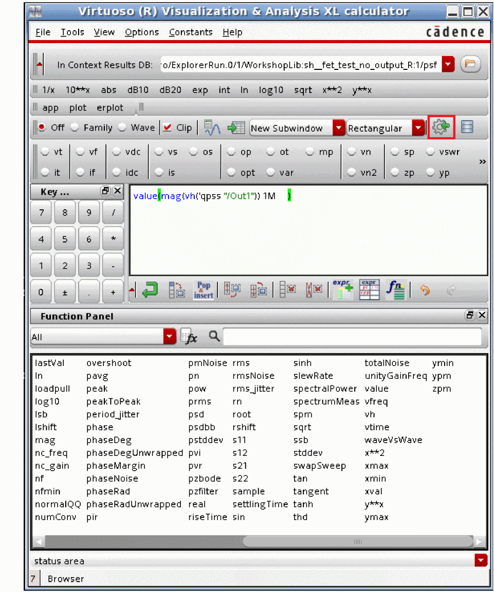
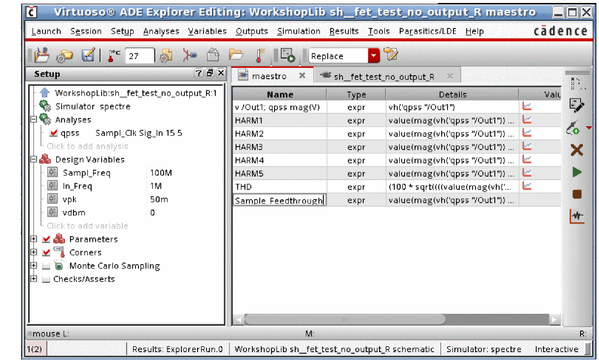
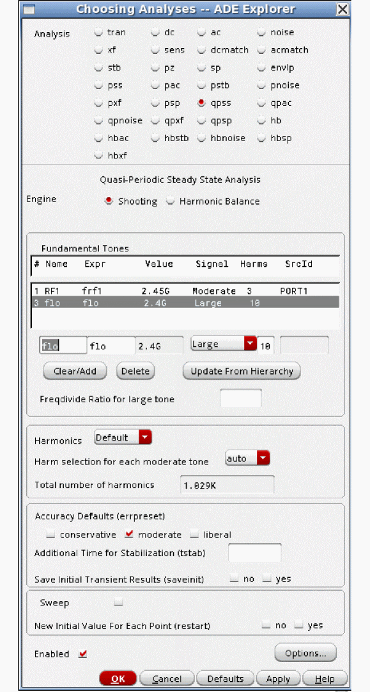
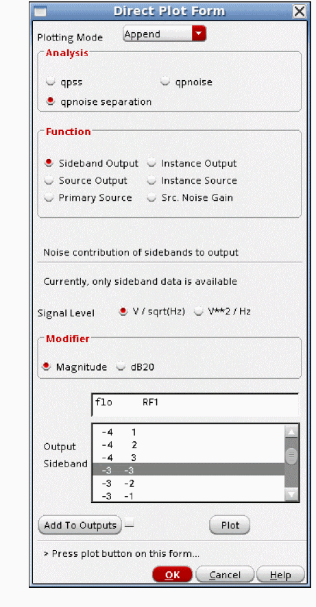
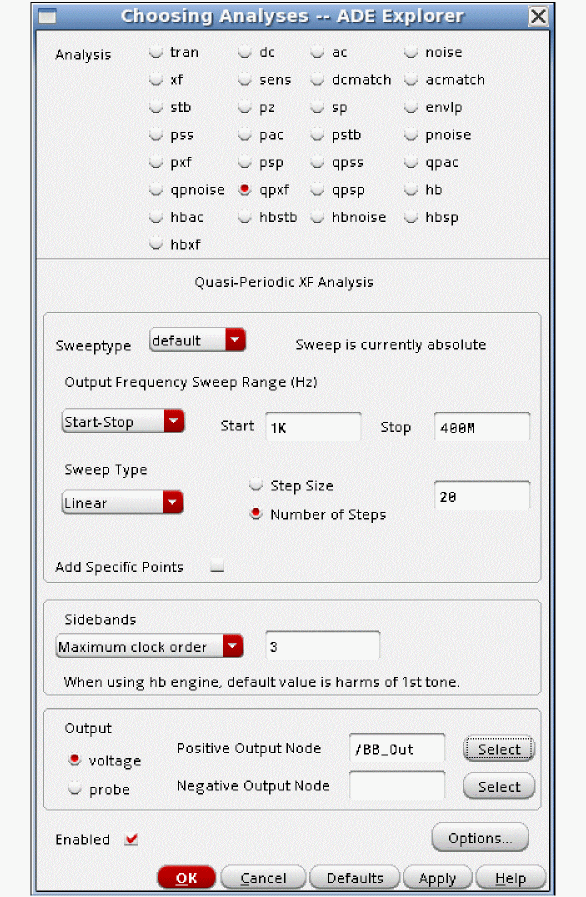
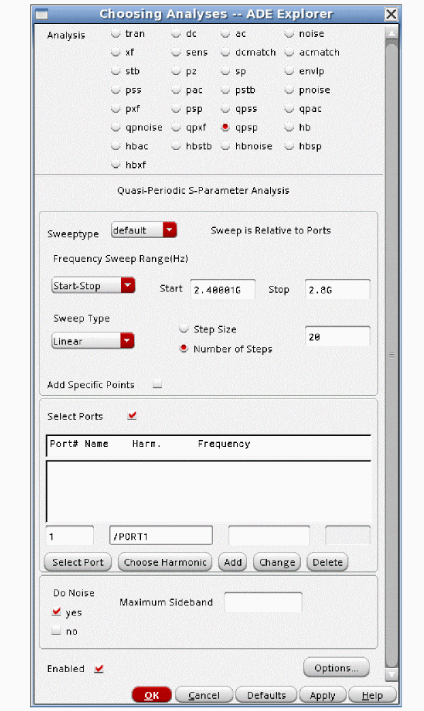

5
Multiple Input Large and Small-signal Analyses
Quasi-Periodic Steady-State Analysis (QPSS)
QPSS is a large-signal analysis that is intended for two or more input frequencies. Both shooting and harmonic balance engines are available in qpss. In general, harmonic balance is faster and uses less memory than shooting for most applications. Shooting qpss should be used for the cases where harmonic balance just does not work because the system is too nonlinear. Examples include sampling circuits with a sample clock and a second periodic input, and switched-capacitor circuits with a sample clock and a periodic input.
In general, when harmonic balance qpss is needed, it is better to use the hb analysis as described in Chapter 3 of this user guide. The reason for this suggestion is that all the harmonic balance improvements are being implemented in the hb analysis Choosing Analyses form, and generally are not added to the qpss Choosing Analyses form. An example is the ability to run an oscillator and a periodic input, which can be done in hb, but not in qpss. Another example is auto harmonic selection.
As a strong recommendation, when you need harmonic balance qpss, switch to the hb Choosing Analyses form instead.
Example
Consider a sampling circuit shown below.
The input source is sinusoidal, and the frequency and amplitude have been set to variable names.
This allows the setting of the frequency and amplitude by changing those variables in the ADE Explorer environment without needing to change the circuit. Note also that there is a DC level for the sinusoid. This is because the circuit only includes an N FET switch. This places the signal in the middle of the range of the circuit.
Variables are also used to set the sample clock.
Those variables are set in ADE Explorer.
For this example, the input frequency is 1MHz with a 50mV peak amplitude. The sample clock is 100MHz.
Now the qpss analysis needs to be set up.

The Engine is shooting. One signal must be set to Large, and the rest must be set to Moderate. The large signal should be the one that causes the most distortion in the circuit. In this case, that signal is the sample clock. Large and Moderate are just terminologies used by qpss. The qpss solution is a large-signal solution with all the signals applied to the circuit. More information will be provided later on in this chapter.
The number of harmonics to be calculated must also be set. For reasons described later, the number of harmonics on the Large signal are not critical. For the moderate signals, if the signal amplitude is well below the compression point, two or three harmonics are suggested. If a signal is at the compression point, five harmonics are suggested. If the signal is above the compression point, start with seven harmonics. You may need more harmonics to get an accurate solution.
Now run the simulation. When the simulation completes, select Results - Direct Plot - Main Form in ADE Explorer. The Direct Plot Form is displayed.
Select qpss results. In this case, the output spectrum will be displayed. Peak is selected because the input is 50mV peak. This allows a direct comparison to be made. Magnitude and not dB is set to get a direct comparison.
Now select the net in the circuit. The output net is selected for this example.
The waveform is zoomed in near DC. A marker has been placed to measure the output amplitude at 1MHz. As expected, the output amplitude is slightly less than 50mV peak.
The sample clock feedthrough is also measured. In the zoomed in view near 100MHz (the sample frequency), the amplitude is about 62 mV peak

QPSS Shooting Concepts
Think of an example where 1GHz and 1GHz plus 1MHz frequencies are applied to a circuit. If we try to use PSS Shooting on this case, then 1000 cycles of 1GHz and 1001 cycles of 1.001GHz need to be simulated by solving for the continuous waveform that is produced.
This is impractical for several reasons. First, shooting pss is known to have convergence problems when the total number of cycles of the highest frequency to be simulated exceeds somewhere between 50 and 250 cycles, depending on the nonlinearity of the circuit. Second, when 1000 cycles need to be simulated, at least 20K timepoints are required to get a reasonably accurate waveform. Because PSS Shooting saves not only the solution voltages and currents (if selected) but also the solution matrix at each timepoint, the amount of memory required for a simulation like this is very high.
If the pss simulation could be completed, all the harmonics of 1MHz would need to be calculated through at least the third harmonic of 1001 MHz, or 3003 harmonics. Not only does the time-domain simulation take a long time, but also the Fourier transform takes a long time.
If you have this case where the pss beat frequency is a small fraction of the highest frequency, use qpss or hb instead.
Qpss is similar to harmonic balance in that you need to specify the number of harmonics to calculate for each tone in the circuit. Qpss calculates the harmonics of the inputs and the mixing products that are specified by the number of harmonics that are set for each input tone. It does not calculate all the harmonics of 1 MHz. Because it does not calculate all the harmonics, it does not need all the data that the pss analysis needs, thus it runs faster than PSS Shooting for an equivalent set of input frequencies.
Qpss does not simulate the continuous waveform. Instead, it solves for the waveform in small slices of time during the overall period. The more harmonics you want to solve for requires that more slices of time need to be simulated. Just like in harmonic balance, calculating more harmonics takes more time and memory. All the input signals are applied in the circuit, and qpss solves for the steady-state waveforms in each slice of time. This time-domain output is never available for plotting. Instead, an ifft is offered to calculate the time-domain waveform.
Qpss shooting requires that you select one signal as large, and the rest of the signals are set to moderate. Large and moderate are just terminology used by the qpss analysis. Qpss shooting is a large-signal analysis with all the signals applied.
The large signal should be the signal that causes the largest amount of distortion in the circuit, or the non-sinusoidal input if there is one present. All the moderate tones must be sinusoidal.
The large signal specifies the period of each slice in time. In order for qpss shooting to be efficient, the large signal must be a high frequency so that the period of each slice is kept short. If you take an example of 1MHz and 1GHz being applied to the circuit, you must select the 1GHz signal as large, or the runtime of qpss will be really long. If you take this example, if you simulate slices of 1GHz, everything works. If you simulate slices of 1MHz, you have very long runtimes.
Here is an example for a system with 1GHz and 1.001GHz applied. The overall waveform contains 1000 cycles of the 1GHz signal and 1001 cycles of the 1.001GHz signal. This waveform comes from the transient analysis.
Below are several shots of a 1 nsec period at different times during the simulation. This is at the very beginning of the simulation.
This is 1/4th of the way through. The waveform in this slice is very different.
This is 3/4ths of the way through.
What qpss shooting does is solve for the steady-state waveform with all the signals applied in the slices that are needed in order to calculate the number of harmonics that are specified for each signal.
Calculating harmonics for the large signal in each slice and averaging the power at each harmonic gives the power in the large signal.
For one moderate signal, (2 * Number of harmonics) + 1 slices need to be simulated. For three harmonics on the moderate signal, then 7 slices need to be simulated. This gives enough information to solve for the positive frequencies, negative frequencies, and the DC term to be calculated.
If there are two moderate signals, then the number of slices is [(2 * Number of harmonics on moderate 1) + 1] * [(2 * Number of harmonics on moderate 2) + 1]. If there are three harmonics on each moderate tone, 7 * 7 or 49 slices need to be simulated. The waveform becomes more complex and the number of harmonics that are created by the system are larger when three tones are applied to the system. below is the transient waveform for 1GHz, 1.004GHz and a 1.005GHz signals applied to the system. This waveform is from the transient analysis.

Each slice is a pss analysis where the solution voltages and currents (if specified) and the solution matrix need to be saved at every timepoint of every pss analysis. For more information about the pss analysis, see the beginning of Chapter 4.
At the end of the simulation, the harmonic content is calculated based on the waveforms in the slices. Since all the input signals are applied in every slice, the harmonics of all the mixing products can be calculated.
What Happens When you Start a QPSS Analysis?
First, two pss iterations are performed with only the large signal applied. This gives an approximate harmonic content with just the large signal applied. This is shown in the Spectre output window, as shown below.
Next, two (by default) stabilization cycles are performed. All the signals are applied to the circuit, and a very simple-minded optimization to attempt to have all the currents sum to zero at all the harmonics at all the nodes is performed. In this phase you will see that all the slices are being simulated. There is only a very small time delay between the first set of slices and the second set of slices. These slices are reported as transient integrations in the qpss output window. In this case, there was a large signal and a single moderate signal with three harmonics specified. This results in seven slices that need to be simulated. Each slice is called a transient integration in the Spectre output window.
The number of stabilization cycles can be controlled by an option called stabcycles. This is shown in the Spectre output window, as shown below.
Finally, a a series of full Newton iterations to the solution of the system is performed. Again, all the slices are solved, and iterating continues until convergence is reached. After each set of slices is simulated, there is a delay while the next iteration is calculated in the Newton iteration. A maximum of 20 Newton iterations are allowed by default, and can be changed by setting the maxperiods option. This circuit converged in three Newton iterations.
ADE Implementation
In this section, just the qpss analysis Choosing Analyses form and the options for qpss are shown. An examples section follows with all the steps needed for a simulation.
To open the Choosing Analyses form select Analysis - Choose in ADE Explorer, or select the Choosing Analyses icon located on the upper right of the ADE Explorer window. You can also click the Click to add analysis text under the Analysis section in the Setup pane of ADE Explorer.
The Choosing Analyses form is displayed as shown below.
In the Choosing Analyses form:
- Select qpss.
- The default engine is Shooting. If you prefer Harmonic Balance, use the hb form, as this form is most up to date.
- All the sources are listed at the top of the form. To change the settings, select one of the lines, and change the values in the editing line just below the list.
- One signal must be Large. This should be the signal that causes the most distortion in the circuit. The frequency of this signal must be relatively high compared to the highest input frequency, or the simulation will be quite slow and require a lot of memory. If there is a non-sinusoidal source in the circuit, that signal must be set as large. All the moderate tones must be sinusoids.
- Select an accuracy level. Liberal is not suggested.
Setting errpreset changes the defaults of a number of qpss options. The options that are affected are shown in the table below.
| Errpreset | Reltol | Lteratio | Maxstep |
|---|---|---|---|
QPSS Options
Commonly Used Options
There are only a small number of options that are commonly used.
stabcycles
If you are having convergence problems, increasing stabcycles usually helps. Increase to about 10. If this does not work, look at the conv_norm number at the end of each stabilization cycle, and increase stabcycles until the conv_norm does not decrease much with more cycles.
maxperiods
Watch the conv_norm number that is reported at the end of each Newton iteration. If this number is generally trending down, then more newton iterations may allow convergence. Start with about 50.
Uncommonly Used QPSS Options
The following options are in the Convergence tab.
ic
Initial conditions can be specified graphically by selecting Simulation - Convergence Aids - Initial Condition in ADE Explorer. Initial conditions can also be specified from a file using the readic property. Capacitors and inductors have the initial condition properties in the property list for the component. For capacitors, this is an initial voltage across the capacitor, and for inductors, it is an initial current in the inductor. The default is to observe all the initial conditions in the DC analysis that is used as the time-zero timepoint. The initial conditions force a voltage or current to be present in the time-zero solution. The initial conditions are released for the rest of the transient simulation in the tstab interval. The ic option controls the initial conditions that should be observed in the time-zero timepoint. all is the default. dev means that only the initial conditions on capacitors and inductors are observed. node means that only the initial conditions on a node are observed. dc means that no initial conditions are observed.
skipdc
In some cases, the time-zero timepoint DC analysis does not converge. Instead of stopping the simulation, skipdc allows the tstab simulation to continue using an assumed solution for the time-zero timepoint in the tstab interval. The default is no and a DC analysis is run to get the initial timepoint. yes means skip the DC solution, and proceed directly to the tstab simulation. All the nodes with initial conditions specified start at the initial condition value. Nodes with batteries start at the battery voltage. Nodes with no initial conditions start at zero volts. For skipdc=yes, the signal sources start as specified immediately in the tstab simulation. sigrampup uses the same assumptions for the starting voltages as yes does, but the start time is set to negative one tenth of the stop time for the tstab interval. At this time, the signal source time-varying part starts at zero and linearly ramps up to the full value at time = zero. After time = zero, the sources have the full amplitude time-varying part.
readic
This specifies an ascii file that contains two columns to be read as initial conditions. The first column is the node name. The second column is the voltage value. If the entry does not start with / (slash), the file is located in the netlist directory. To find the netlist directory, select Setup- Simulator/Directory/Host in ADE Explorer. Look in the Project Directory field for the location of the simulation directory. Navigate to that directory and then to the <Circuit Name>/spectre/<schematic or config>/netlist directory. You can also click ( ) and browse to the directory.
) and browse to the directory.
maxiters
The transient analysis for tstab and shooting interval iterate to a solution at each timepoint. maxiters specifies the maximum number of iterations before the timestep is cut for another try at convergence. In some cases, model parameters can cause discontinuities in the device current or capacitance. If this occurs, the change in the circuit condition when the discontinuity is crossed can be large enough to require more than the five iterations that are allowed by default. Specifying maxiters to the 40 to 100 range usually allows the simulator to converge in spite of the discontinuity.
The following options are in the Accuracy tab.
method
This option controls the integration method for tstab and the shooting windows.The default value is gear2only, which is recommended for all qpss simulations.
relref
In the order of most to least accurate, the relref settings are pointlocal, alllocal, sigglobal, and allglobal. The default for the moderate and conservative accuracy selections is alllocal which is preferred. Liberal is not suggested.
relref is used in the transient analysis in the tstab interval for both shooting and harmonic balance and in the shooting window for shooting. In some cases, the timestep can collapse to near zero when the default is used for relref. The symptom is that in the Spectre output window, no progress is made for many reporting intervals. By default, every 10 seconds, Spectre will show progress in the tstab and shooting intervals. For example, for every update in the Spectre output window, the percent complete might stay at 15%. The solution to this is to set relref to sigglobal, which is slightly less accurate. In the Fourier transform, the noise floor usually degrades by 3 to 6 dB. Another possibility is to try the lteminstep option as described in the AdditionalParams option of the Misc tab.
Refer to Relref for a detailed discussion on relref.
lteratio
lteratio is a multiplier for the allowable numerical integration error in the tstab interval and the shooting windows. The default is 3.5. lteratio cannot be set smaller than 1.0 and is normally between 3.5 and 100. In some cases, the timestep collapses to near zero In this case, there might be a model discontinuity. To test this, disable numerical integration timestep control by setting lteratio to 1e9. Note that this is an extreme measure not to be used under normal simulations. If the timestep still collapses, there is a discontinuity in one of the models in the circuit. This could be a device model or a Verilog-A model. If it is necessary to set lteratio very large to get the simulation to complete, you must also set maxstep small enough to preserve the accuracy of the simulation.
itres
Use the default for this option.
Itres controls the precision (number of digits solved for) in the first Newton iteration. The default is 1e-4 which causes four digits of resolution in the first Newton iteration. Subsequent iterations are solved with more precision.
resgmrescycle
Leave this option at the default.
inexactnewton
In the simulation time between iterations, an estimate is made for the starting point for the next iteration. inexactNewton causes an inexact solution for the matrix that calculates the next starting point to be calculated. In some cases, solving the matrix exactly on the first iteration can cause the iterative solver to need many iterations to achieve convergence. Setting inexactNewton causes a different series of iterations, which may speed up the simulation, or alternatively, allow the simulation to converge. The inexactness is reduced as the iterations progress. Try this option when you have convergence difficulties.
The following options are in the Output tab.
annotate
This option controls the level of detail in the output log. The default is status. No detail is provided when you select no, while more details are provided as you move towards right with steps option providing maximum detail.
save
The default is allpub. This saves all the public voltages at all levels of the hierarchy in the schematic. It excludes the internal nodes of the device models. all adds the internal nodes of all the devices. lvl saves all the nodes including the internal nodes of the devices through the level of hierarchy set in the nestlvl option. lvlpub is like lvl, but it does not save the internal nodes. selected saves only the nodes that are specifically saved.
nestlvl
If save is set to lvl or lvlpub, this controls the maximum level of hierarchy to be saved. If nestlvl is 1, only the top level is saved. If nestlvl is 2, the top level and the next level down are saved. The value for nestlvl must be an integer.
compression
Normally, this should not be used for RF simulation. It is not digital compression. This option applies only in the tstab interval of the simulation. For RF simulation, where the input is sinusoidal, the size of the results file will normally double. It is useful only for circuits that are predominantly square wave.
oppoint
Normally, this should be left at the default of rawfile. It controls where the time-zero operating point solution should be saved to.
skipstart
Normally, this is not used for RF simulation unless there is a very long tstab. It is a way of reducing the amount of data in the output file from the tstab interval by not writing many of the timepoints to the output file. skipstart controls the simulation time where the skipping is to start. The default is 0 (zero).
If you want to save all the data for the first 5% of tstab, set skipstart to 0.05 * Tstab time. This will save all the data in the first part of the startup interval in tstab, and then begin reducing the amount of data sent to the output file.
skipstop
Normally, this is not used for RF simulation unless there is a very long tstab. This specifies the simulation time in the tstab interval where the skipping is to stop. The default is the stop time in the tstab interval.
If you want to save all the data for the last 5% of tstab, set skipstart to 0.95 * Tstab time. This will save all the data in the last part of the startup interval in tstab. This allows full resolution at the end of the startup interval.
skipcount
If skipstart and skipstop are set, either skipcount or strobeperiod should be set, but not both. skipcount saves one out of every skipcount points to the output data file. A skipcount of 3 saves one, then skips two points. Skipcount of 10 saves one in 10 timepoints to the output file. The default is 1, which saves every point.
strobeperiod
If skipstart and skipstop are set, either skipcount or strobeperiod should be set, but not both. strobeperiod forces the simulation datapoints between skipstart and skipstop at the interval of strobeperiod.
strobedelay
strobedelay specifies a time after the skipstart point for the beginning of the strobing. strobedelay must be between 0 (zero) and the time set in strobeperiod.
The following options are in the Reuse tab.
write
write specifies a filename in which to write the DC solution used as the first timepoint. If the name does not start with slash (/), the file will be written in the netlist directory. To determine the netlist directory location, select Setup - Simulator/Directory/Host in ADE Explorer. The Project Directory field lists the location of the simulation directory. From this directory, the netlist directory is in <Circuit Name>/<simulator name>/<schematic or config>/netlist.
writefinal
writefinal writes the final qpss timepoint from the shooting window (not the final timepoint of the tstab interval) to the filename specified. See the description for write for the location.
swapfile
During the shooting intervals, the solution matrices need to be saved in order to calculate the settled voltages of every node for the next iteration. The solution matrices are the internal solution for all the simultaneous equations for the circuit. The solution vector is also saved, and these are the solution voltages and currents. Normally, this data is kept in memory which makes the Spectre process get larger, starting with the first Newton iteration. On 32-bit systems, a maximum process-size of slightly less than 4GB limits the size of the circuit that can be simulated. Even on 64-bit systems, there is a limit set by the amount of memory that is installed on the system that is running Spectre. If the process gets larger than the installed memory, then the process starts swapping to the disk.
Swapping that is done by the operating system is inefficient because there is no logical relationship for the swapped memory pages. Setting swapfile to a name causes Spectre to write all the solution matrices to the disk in sequential cylinders so that the read time from the disk is faster than using swapping by the operating system. Disk accesses are inherently much slower than memory accesses, however, using swapfile is considerably faster than swapping in the OS. Using swapfile reduces the size of the Spectre process so that it fits in the memory installed in the machine, or allows larger circuits to be simulated. There is a large amount of data that typically is written to the disk. Because of this, the best choice is to write the data in a disk that is local to the machine. If the data is written over a high-latency network, it might actually be better to use the local swap space. Only a trial can determine which is better.
writeqpss
This option specifies that the full internal state of the qpss analysis be written out to the file specified in the option.
readqpss
This option specifies the file to be read in as a starting point for the next qpss analysis. If nothing is changed in the circuit, then only one Newton iteration is performed and small-signal analyses can be run with a much faster time for the qpss analysis. Small changes can be made to the circuit or to the analysis options as long as the topology of the circuit stays the same. Changes introduce a discontinuity at the beginning of the qpss analysis, which might be large enough to cause the qpss analysis to not converge.
saveclock
saveclock saves the state of the simulation in the tstab interval at the time interval in seconds specified by saveclock. When the clock time has passed in the tstab interval, the file specified by the option savefile is created. When subsequent clock time intervals have passed, the file is overwritten. Use only one of the save options at a time.
saveperiod
saveperiod saves the state of the simulation in the tstab interval at the simulation time interval in seconds specified by saveperiod. When the simulation time has passed in the tstab interval, the file specified by the option savefile is created. When subsequent simulation time intervals have passed, the file is overwritten. Use only one of the save options at a time.
savetime
savetime is a list of times in the tstab interval where the state of the simulation is written out. The list should be specified with spaces between the entries. The information is written out with the filename specified in the savefile option with extensions for the time after that. Use only one of the save options at a time.
savefile
This is the file name to write out the tstab state information to. If you do not specify a filename that starts with the slash (/) character, the file is stored in the netlist directory. To locate the netlist directory, first select Setup - Simulator/Directory/Host menu in ADE Explorer, and read the path to the project directory. This is the path to the simulation directory. In the simulation directory, navigate to the <circuit_name>/spectre/<schematic or config>/netlist directory.
Do not specify a relative path name like ./save_file/run1.
recover
recover specifies the file name to recover the tstab simulation from. If saveperiod or saveclock are used to make the savefile, then just the same name as specified in savefile is used. If savetimes has a list of times specified, then several files are created at the times specified in the list. Click ( ) and browse to the netlist directory where the savefiles are shown.
) and browse to the netlist directory where the savefiles are shown.

Select one from the list, and click Open. This adds the full path to the recover option, as shown below. Also note that in the example below, the savefile option is still set, and times after the restart times are specified. This is specifically allowed. As long as tstab is 200n or larger, the files at 175n and 200n will be added and can be reused later.
The following options are in the Misc tab.
step
Leave this option at the default. All the nodes are checked for curvature in the local truncation error (Numerical integration error) check. If that node has a capacitor or inductor connected to it, the timestep should be controlled to reduce the numerical integration error. If the node does not have a capacitor or inductor connected to it and it has a lot of curvature, the timestep can only be reduced to the value specified in the step option. The default is the simulation interval divided by 1000.
maxstep
In qpss shooting, maxstep is observed in the tstab interval and in each of the shooting windows. Normally, maxstep should be left at the default and either setting errpreset or changing reltol is used to control the accuracy. In some cases, extreme accuracy is needed, and this is accomplished by setting a small maxstep value. A small constant timestep produces maximum accuracy at the cost of runtime and memory consumption.
readns
This specifies an ascii file with the same format as an ic file that is used as nodesets for the time-zero DC solution. Nodesets do not force a voltage to be held for the time-zero solution. Instead, they are a way of speeding up the time-zero calculation. As a suggestion, set the write option and the readns option to the same filename. The write option writes the time-zero solution to a file. When this is used as a starting point, many fewer iterations are needed for the time-zero point to converge.
cmin
cmin can be used to improve convergence in the tstab and shooting intervals. If a value is set for cmin, a capacitor with this value is added to every node with the other terminal of the capacitor connected to the global ground node. If a 10f to 50f capacitor is added, this prevents instantaneous changes from occurring from timepoint to timepoint, thus improving the convergence at the cost of adding non-physical capacitors to the circuit. An example with 10 femtoFarads is shown below. Note that if 10 is entered, a 10 Farad capacitor is added from every node to ground. Remember the multiplier in the entry. An example is shown below.
tstart
Normally, this is not used. tstart specifies the starting time for the tstab interval and defaults to 0 (zero). A negative, 0, or positive tstart is allowed.
additionalParams
This is a field for <option_name>=value statements. Multiple <option_name>=value statements are allowed with a space between them. Generally, this is used to unlock the beta features, however, there is one case where this field might be useful for an option that is not in the GUI.
In some cases, either in the tstab interval or in one or more of the shooting windows, the timestep collapses to near zero. The symptom is that the percent complete stays at the same value for many reporting intervals. In this case, there might be a discontinuity in one of the models.
In transient simulation, two things can reduce the timestep; having too much numerical integration error or taking too many iterations at a single timestep can cause the timestep to be cut. Spectre does not report what is causing the timestep to become small. One way to eliminate the possibility of numerical integration error (which is called local truncation error in the simulator) as the cause of reducing the timestep is to set lteratio to 1e9. The disadvantage of this is that it disables the normal method of timestep control, therefore, maxstep must be set to maintain accuracy.
Another way to accomplish this is to set lteminstep to a value of about the stop time divided by 1e5. This allows the normal method of timestep control, but if for some reason the numerical integration error wants to cut the timestep too small, the error is ignored. lteminstep is the way to specify this. To do this in ADE Explorer, type lteminstep=<Stop_Time>/1e5. If you use lteratio=1e9, or if you set lteminstep and you still have very small timesteps, try increasing maxiters in the Convergence tab to between 40 and 100. When lteratio or lteminstep is set and you still have timestep problems, there is likely a discontinuity in either a device model or in a Verilog-A model. An example is shown below.
Example
Consider a sample and hold circuit below.
-
The input signal properties are shown below.
- The input frequency and amplitude terms are set to variable names so that the amplitude and frequency can be easily set in ADE Explorer. Also, note that the sinusoid is centered at 1.55 volts. This is because the simple circuit above runs between 0 volts and 3.3 volts.
-
Next, the variable values are set in ADE Explorer. The sample clock is 100MHz, and the signal is at 1MHz.
-
Now, the qpss analysis is set up, as shown below.
- All the sources in the circuit are listed in the table at the top. The sample clock is set to large for two reasons. First, it causes the most distortion in the circuit. Second, it is the nonsinusoidal source. The input signal is set to moderate. 15 sample clock harmonics are set, and 5 harmonics for the input signal are set. Conservative is used because the distortion is likely to be small at low input amplitude.
-
Now, run the simulation. When the run is complete, select Results - Direct Plot - Main Form in the ADE Explorer window. The Direct Plot Form is displayed.
In the Direct Plot Form: - Select qpss. In this case, the voltage spectrum is plotted. Peak is used because it allows a direct comparison of input amplitude in volts peak to the output amplitude in volts peak. Add To Outputs is selected so that an expression gets added under the Maestro tab of the ADE Explorer window.
-
The result is displayed in the waveform window.
-
Since the output at low frequency is desired, the X Axis is scaled to show just the output terms and the harmonics. To place a marker, move your mouse cursor near the frequency point you want, and type m.
- The output is near 50mv, as set in the input source.
Add an ADE expression to calculate the amplitude of the output at the input frequency.
When you select the Add to Outputs check box in the Direct Plot Form and plot the results, the expression is added in the Details column, under the Maestro tab of ADE Explorer, as shown below.
-
Click twice on the expression and then click the Open calculator button, as shown below.
Starting with the IC615 ISR12 release and later, the RF expressions are much simpler than they were in the past.The calculator starts with the expression in the buffer.
-
In the calculator, select the mag function to convert the complex voltage to a scalar voltage. The assumption here is that the load is resistive, and any voltage regardless of phase will create power.
‘ -
In the calculator, select the value function to get the value at 1MHz and click OK.
-
Select the Send buffer expression to ADE Outputs button, as shown below.
Alternatively, you can click Tools - Send Buffer to ADE Outputs.
This adds the expression under the Maestro tab of ADE Explorer, as shown below.
-
Specify a name for the expression. Here, it shows HARM1.
In a similar manner, add expressions for all 5 harmonics of the output -
To verify that the expressions work, click the plot Outputs icon located at the right of the ADE explorer window.
Now build a calculator expression to calculate THD.
THD in percent is defined as: 100* square root (total power in the harmonics divided by the power in the fundamental).
First, build an expression to calculate the power in the harmonics.
- Open the HARM2 expression in the Calculator window by clicking the Open calculator button.
-
This adds the expression into the calculator.

-
In the calculator, select the x**2 function. (Square the expression) This converts voltage to power.
- Press the <Enter> key three times. You may need to click View - Show Stack to view the stack. This is the beginning of adding the power in the higher harmonics.
-
Click + (the plus sign) three times. Now change the frequencies in the buffer so you have 2M + 3M +4M +5M. This adds the power in the higher harmonics.
-
Verify that the expression is legal by clicking Evaluate the buffer and display the results in a table. This is an insurance step that is always recommended when you build calculator expressions. The icon for the table output is shown in the red box below.
-
The value is shown below.
-
Add parentheses around the entire expression using the mouse and keyboard.
-
Press the <Enter> key on your keyboard. The expression is entered into the stack.
-
Open the HARM1 expression in the calculator.
-
Click the X**2 special function. This calculates the power in the first harmonic.
-
Select the / (divide by) key. This divides the power in the harmonics by the power in the fundamental.
-
Verify that the expression is legal by clicking the Evaluate the buffer and display the results in a table button in the calculator.
-
The result is shown below.
-
Select the sqrt (square root) special function.
-
Verify that the expression is legal by clicking the Evaluate the buffer and display the results in a table button in the calculator.
-
The value is shown below.
-
Click at the beginning of the expression, and type 100*.
-
Verify that the expression is legal by clicking the Evaluate the buffer and display the results in a table button in the calculator.
-
The value is shown below.
-
In the Calculator window, choose Tools - Send Buffer to ADE Outputs.
The expression is added under the Maestro tab of the ADE Explorer window. -
Type THD in the Name field.
.
Now sweep the input level, and run the simulation.
-
In the ADE window, double-click the qpss line under the Analysis section in the Setup pane. The qpss Choosing Analyses Form is displayed.
- Select the check box to the right of the Sweep drop-down list.
- Select the appropriate design variable that sets the input amplitude.
-
Specify an appropriate range and step size for your application. In this example, 50mv to 1.1v is the sweep range, with linear spacing. Click OK, and run the analysis. When the simulation completes, the amplitude of the first five harmonics, and the THD plot, as shown below.
- Markers are placed at the input amplitude of 1 volt peak. At that level, the output is 970mV peak, and the THD is 2.99%.
Add an expression to measure the clock feedthrough
- Open the HARM4 expression in the calculator by click the Open calculator button.
-
This adds the expression for the 5MHz term into the calculator. In the calculator, change 5M to 100M.
- In the Calculator window, choose Tools - Send Buffer to ADE Outputs. The expression is added under the Maestro tab of the ADE Explorer window.
-
Name the expression Sample_Feedthrough.
 -
Deselect all the check boxes under in the Plot column for all the expressions except for Sample_Feedthrough.
-
Click the Plot Outputs icon in ADE Explorer.
This plots the clock feedthrough.
Remember that this is a peak measurement.
Now plot the time-domain waveforms
- In the waveform tool, click File - Close All Windows.
-
In ADE Explorer, click Results - Direct Plot - Main Form. The Direct Plot Form is displayed.
- In the Direct Plot Form, select ifft from the Sweep section
- Select Complete ifft.
- Select 100m.
- Click Replot.
- Select 300m.
- Click Replot.
- Select 500m.
- Click Replot.
- Select 700m.
- Click Replot.
- Select 900m.
- Click Replot.
- Select 1.1.
-
Click Replot.
Although the distortion is not visible until the input amplitude becomes 1.1 volts, there is distortion in the output waveform at the lower levels.
Quasi-Periodic AC Analysis (QPAC)
Refer to the pac analysis section in Chapter 4 for details about the pac analysis.
Qpac is just like pac, except it runs after a qpss analysis instead of after a pss analysis. Qpss captures the harmonics of the system, and qpac applies a single input frequency at a time, and calculates the output mixing products when the qpac input mixes with the harmonics of qpss. Conceptually, the only difference from pss-pac is that qpss has more signals and more harmonics in it to mix with, so there are more output mixing terms.
Example
The input port has the frequency and amplitude set using variable names. This is done in order to allow the frequency and amplitude changes in ADE Explorer without the need for changing the schematic.
PAC Magnitude is set to 1 V in the port. PAC Magnitude is used by pac and qpac to define the amplitude of the input signal for both analyses. This allows convenient measurement of conversion gain. Since the input is set to 0 dB, the conversion gain can be read directly just by probing the desired net.
In a similar manner, the LO signal uses variable names. These variables are set in the ADE Explorer window.
Next, the qpss analysis needs to be set up. For more information, see the qpss section at the beginning of this chapter.
Next, the qpac analysis needs to be set up.
- The input is from 850MHz to 950MHz, with a linear sweep.
- Because 10 harmonics were set in the qpss analysis for the LO tone, 10 is set for Maximum clock order. These numbers should agree.
- Now run the analysis.
-
When the simulation completes, select Results - Direct Plot - Main Form in the ADE Explorer window. The Direct Plot Form is displayed.
- Select qpac from the Analysis section.
- In many cases, dB20 is useful.
-
The output net in the schematic is selected, The conversion gain terms are plotted, as shown below.
Because there are a large number of harmonics in the circuit, there are a large number of mixing products that are produced. In the view below, zooming is applied to show just the main mixing products. Markers have been placed for the center frequency of the sum and difference frequency mixing terms.
As is common for diode mixers, the insertion loss is about 6 dB.
Qpac Concepts
Generally, when qpac is needed, harmonic balance is appropriate for the simulation engine. In this case, the hb and hbac analyses are recommended because the hb and hb analysis forms always have the latest features.
Qpac applies a small-signal input to the system that is simulated with the qpss analysis. Qpss solves for the harmonics of the system with two or more inputs to the circuit. Qpac calculates the small-signal outputs that are created by mixing with all the harmonics that are in the qpss solution.
One application of qpss-qpac is measuring conversion gain of an LNA-Mixer circuit when a large amplitude blocking signal is present. In this case, the LO and the blocker are applied in qpss, and the small-signal conversion gain is measured using qpac. Note that for this application, harmonic balance is likely to run faster than shooting, and as a strong recommendation, use the hb and hbac analysis for this application.
Unlike hbac, qpac has only one mode, which measures the small-signal mixing products. Modulated, sampled, rapid IP3 and IP2, and the distortion summaries from hbac are not available in qpac.
Down Conversion: Input Near the First harmonic of the LO
Qpac is for measuring the conversion gain that is the average conversion gain with all the signals applied to the circuit (usually the LO or the sample clock and a blocking signal) applied to the circuit. The mixing products that are produced are called sidebands. The sideband number has a value for each signal that is applied to the circuit, and is the harmonic number that is being mixed with to provide the output. A positive number means that the output mixing product is higher in frequency than the input frequency specified in the Choosing Analyses form. A negative number means that the output is lower in frequency than the input frequency. If there are two inputs to the circuit in the qpss analysis, there will be two numbers for each qpac sideband. In the example below, there is an LO at 1.8GHz and a blocker at 2GHz. The RF small-signal input is at 1.85GHz. A waveform plot is shown below. The red spectrum is the spectrum calculated by the qpss analysis, and the small dots are the qpac result. The amplitude of the qpac output is larger than the qpss output because the qpac outputs assume a 1 volt input, and the qpss has much smaller input levels. It will explain further.
All the sideband numbers are plotted on the left of the waveform tool. When 0 0 is selected, the output frequency is the input frequency that does not mix with either input frequency. Thus, the 0 0 sideband is at 1.85GHz (the input frequency) as shown below.
The primary output mixing product is the signal that mixes down with the LO, and does not mix with the blocker. It mixes down with the first harmonic of the LO, and does not mix with the RF blocker, thus the sideband number is -1 0.
1.85GHz (the input frequency) minus 1*LO frequency (1.8GHz) is 50MHz.
1.85GHz can also mix down with the blocker frequency. In this case, the signal mixes down with the first harmonic of the blocker (2GHz) and not with the LO.
The sideband number here is 0 -1. 1.85GHz -1*2GHz = -150MHz. By default, this is mirrored up to the positive frequency domain in the qpac analysis.
Next, the frequency can mix up with the LO. This is the 1 0 sideband.
To calculate the frequency, the input is 1.85GHz + 1* 1.8GHz = 3.65GHz.
The Easy Way to Calculate Sideband Numbers and Frequencies
The easy way to calculate sideband numbers and frequencies is to use the Direct Plot Form. The Direct Plot Form displays the sideband numbers and the frequency ranges when you select sideband, as shown below.

In this example, the LO is at 1.8GHz, the RF Blocker is at 2GHz, and the input sweep range is 1850MHz to 1851MHz.
Avoid Wide Sweep Ranges
Wide sweep ranges cause very confusing results. This should be avoided. An example is shown below.
The marker is placed at 1.7GHz. The value from qpac at the marker value is shown in the legend area on the left side of the waveform display. The different traces result from mixing with different harmonics in the qpss analysis.
Relative Frequency Sweep
The qpac analysis is like AC, where the input frequency is swept. The input frequency range is specified in the qpac Choosing Analyses form.
In addition to the frequency, there is a selection called Sweep Type. The choices are relative and absolute. When absolute is selected, the frequency range is used directly with no frequency conversion. When relative is selected, a Relative Harmonic field appears. The frequency sweep is shifted by the specified frequency of the harmonic numbers in the qpss analysis.
For example, assume that the qpss has a 1GHz large-signal input, and a 900MHz Moderate input. You want a log sweep above the first harmonic of the 1GHz signal in the qpss analysis. In this case, you need to select relative sweep, and specify 1 0 in the Relative Harmonic field. The first number is the frequency shift in multiples of the LO frequency, and the second number is the frequency shift in multiples of the RF input frequency. Next, type in 1K to 100M for the frequency range with a log sweep and 3 to 5 points per decade.
The sweep will start at 1G + 1K, and sweep to 1G + 100M using log spacing from 1K to 100M. This is illustrated below.
To use a log sweep below the first harmonic of the 1GHz input, use the same frequency range, and type in -1 0 as the relative harmonic. This is illustrated below.
Maximum Clock Order
In this case, clock is the terminology for the large signal in the qpss analysis. Sidebands (the output mixing products calculated by qpac) are calculated through the highest harmonic of the large signal in the qpss analysis. This is usually the LO signal.
Conceptually, an infinite number of mixing products are produced when a single input is applied to a nonlinear system. From the practical point of view, usually only a small number of mixing products need to be measured.
Consider an example. Assume that a 1GHz large signal and a 900MHz moderate signal is applied in qpss. 10 harmonics are set for the large signal at 1GHz, and three harmonics are specified for the moderate signal. Assume there is no need to measure the mixing products above the third harmonic of the LO because there is no spec at frequencies above that. In that case, you could set Maximum clock order to three, and only the mixing products that are produced by mixing with the first three harmonics of the LO are calculated in the qpac analysis.
Sideband is the name of the qpac output mixing product. The sideband number is the qpss harmonic numbers that is being mixed with. If the sideband number is negative, the output frequency is mixed down in frequency from that input. If the sideband is positive, the output is mixed up in frequency. A sideband contains the same number of numbers as there are tones in the circuit. If there are 2 tones in the circuit, each sideband has two numbers, like -1 0. If there are three inputs, each sideband has three numbers, like -1 0 0.
Setting Harmonics in QPSS to get Accurate QPAC Results
The qpss analysis, when shooting is selected, has a minimum of 200 timepoints in each slice, so the large signal in qpss inherently has frequency domain content through the 100th harmonic of the large signal input. Only the harmonics that are specified in the moderate tone are included in the solution. The impact of this is that the qpac mixing products that are produced from mixing with the large signal are almost always correct, but the mixing with the moderate signal might or might not be accurate, depending on the number of harmonics that are specified for the moderate signal, and the number of harmonics actually produced by the system. Like harmonic balance, you need to run the qpss and qpac with a number of harmonics specified for the moderate tone(s), and make the measurement in qpac. Then increase the number of moderate harmonics by about 50%, and run again. Then note the measurement. If the result changed significantly, then you need more moderate harmonics. If the result did not change, you might be able to reduce the number of moderate harmonics. Use the smallest number of moderate harmonics that produce a stable qpac result.
ADE Implementation
In this section, just the qpac analysis Choosing Analyses form and the options for qpac are shown. An examples section follows with all the steps needed for a simulation.
To open the Choosing Analyses form, select Analysis - Choose in ADE Explorer, or click he Choosing Analyses icon ()on the right of the ADE Explorer window.
The qpac Choosing Analyses form appears.
The frequency range is the input frequency range. It is usually better to select Linear or Log spacing, and define your own sweep because auto is likely to take more points (and time) than you need. Maximum clock order specifies the highest qpss large signal harmonic to calculate mixing products for.
If you need a log sweep around a harmonic, set the Sweeptype to Relative.
The number of numbers in the relative harmonic must be equal to the number of qpss tones. If there are 2 qpss tones, there should be two numbers in the relative harmonic. The first number is the harmonic number and direction that the qpac tone mixes with for the large tone in qpss. The second number specifies the harmonic number of the moderate tone that the input frequency mixes with. Generally, the first tone is the LO tone, and the second tone is the RF blocker. Generally, we design to mix with he LO, and not mix with the blocker, thus the first number is usually 1 or -1 because generally we mix with the first harmonic of the LO, and generally the second number is zero because we don’t deliberately mix with the RF blocker.
QPAC Options
None of the qpac options are commonly used.
tolerance
Leave this option at the default value.
Qpac uses an iterative solver to calculate the output amplitudes. Any iterative solver needs an error tolerance to specify when to stop iterating because the solution is accurate enough, and the tolerance option specifies that accuracy for the qpac analysis. For shooting, the default tolerance is 1e-9. When harmonic balance is the qpss engine, the default is 1e-6.
gear_order
solver
The default solver is the turbo solver.
When hb is used as the engine in qpss, leave this option at the default.
When shooting is used, sometimes when the qpac input frequency is very close to the frequency of one of the harmonics in the qpss, warning messages will appear in the qpac output warning that the accuracy might not be good enough. If you see these messages, select the std solver, which has better ability to handle frequencies that are very close to a harmonic in the qpss solution, but which takes longer to run than the turbo solver.
resgmrescycle
Leave this option at the default. For the resgmres linear solver, there are several different options.
hbprecond_solver
This option is only available only when harmonic balance is selected in qpss.
The basic solver is the only solver available in standard Spectre. autoset is the default solver when APS is used. This solver is faster, but occasionally stagnates. When stagnation is detected, APS automatically switches to the basic solver, and prints a message in the Spectre output window.
annotate
Selections to the left produce less qpac output in the Spectre output window. No detail is provided when you select no, while more details are provided as you move towards right with steps option providing maximum detail.
freqaxis
freqaxis specifies whether you want to see the negative frequency axis or not.
The analysis calculates the output frequencies and amplitudes, so out and absout are reasonable choices. out displays the negative frequency axis. absout (absolute value of the output) displays positive output frequencies. This is the default.
If you select in, all the outputs at the different frequencies are plotted on the same input frequency range scale. This is not recommended.
save
The default is allpub. This saves all the public voltages at all levels of the hierarchy in the schematic. It excludes the internal nodes of the device models. all adds the internal nodes of all the devices. lvl saves all the nodes including the internal nodes of the devices through the level of hierarchy set in the nestlvl option. lvlpub is like lvl, but it does not save the internal nodes. selected saves only the nodes that are specifically saved. In ADE Explorer, this is accomplished using the Outputs - To Be Saved - Select On Schematic and then selecting the nodes and terminals specifically in the schematic. At the netlist level, this is accomplished by using a save statement with a list of names to be saved.
nestlvl
If save is set to lvl or lvlpub, this controls the maximum level of hierarchy to be saved. If nestlvl is 1, only the top level is saved. If nestlvl is 2, the top level and the next level down are saved. The value for nestlvl can be any integer.
additionalParams
additionalParams is typically used for new features that are being beta tested. It is a field where keyword=value pairs are entered.
For more information about the other options, type spectre -h qpac at the command prompt in a Unix shell window
Example
Consider a mixer circuit below.
The RF source properties list is shown below.
PAC magnitude controls the amplitude of the qpac input signal. Setting the amplitude to 1 volt allows the conversion gain to be read directly from the output waveform.
The large-signal properties are set to variable names so the frequencies and amplitude can be controlled using variables in ADE Explorer.
In this example, the LO is at 1.9GHz, and the RF input is at 2GHz. The second RF input is disabled for the qpss analysis by setting its frequency to zero.
- Now select Analysis - Choose, or click the Choosing Analyses icon ( )in the ADE Explorer window.
-
Select qpss. The qpss analysis must be run before a qpac can run. For more information on setting the qpss form, see the qpss section at the beginning of this chapter.
- If there is a non-sinusoidal source, it must be set to large. This is a requirement even if the non-sinusoidal signal produces only a small amount of distortion. Otherwise, the large signal should be the signal that causes the most distortion in the system.
- Set harmonics large enough to capture the actual harmonics that are produced by your circuit.
-
Now select qpac.
- This setup causes a log sweep just above the first harmonic of the LO signal. The qpss analysis has 2 tones in it, so the Relative Harmonic field has two numbers in it. The first number is the harmonic number of the large signal that is being mixed with, and the second number is the harmonic number of the moderate tone that is being mixed with. 1 0 causes the input frequency to be shifted up by mixing with the first harmonic of the LO signal. This puts the input frequency just above the LO frequency.
- It is usually better to select a Linear or Log sweep and specify your own frequency points because automatic will likely take more points (and runtime) than is needed.
- Maximum clock order specifies the highest harmonic of the LO tone to calculate outputs for. If you do not need to measure high order mixing products, this can be set fairly small. If you use the harmonic balance engine in qpss, it is suggested that you set Maximum sideband to the same value used for the number of LO harmonics in the qpss, or leave the field blank, which does the same thing.
-
Run the simulation. When the simulation completes, select Results - Direct Plot - Main Form. The Direct Plot Form is displayed.
- Select qpss from the Analysis section.
- Select the output net in the circuit.
-
Click OK.
The spectral plot is shown below.
. -
In this example, the display has been zoomed in for more detail, as shown below.
-
In the Direct Plot Form, select qpac from the Analysis section.
-
Select sideband from the Sweep section. This allows the plotting of the individual output mixing products. Select the term you want from the list, and select the desired net in your circuit. The output of all the sidebands in range of the X axis is shown below.
- The qpac output has a larger amplitude than the qpss output because the qpac input amplitude is set to 1 volt, and the qpss amplitudes are much smaller.
-
To measure conversion gain, go to the desired output frequency, and position a marker as shown below, or use the tracking cursor in the waveform tool.
- The conversion gain is about 13.5dB.
-
Now sweep the input power of the RF blocker in the qpss analysis. Select the check box next to Sweep, and specify a sweep range that is appropriate for your system.
-
Set the qpac analysis to a single frequency, and set the input frequency in the passband.
-
Now run the simulation. When the simulation completes, select Results - Direct Plot - Main form in the ADE Explorer window. The Direct Plot Form is displayed.
- Select variable from the Sweep section, and select the output frequency. Usually, dB20 is appropriate. Now select the output net in the schematic.
-
The Waveform displays. As expected, the conversion gain goes down when the blocker amplitude gets large.
Quasi Periodic Noise Analysis
Overview
The concepts of qpnoise analysis are exactly the same as pnoise analysis, except that instead of running a pss analysis to capture the nonlinearity of the circuit, qpss captures the nonlinearity of the circuit. In qpss, there are multiple inputs which cause many harmonics to be produced by the circuit. All of these frequencies in the circuit can mix with noise frequencies to be converted to the output frequency of the qpnoise analysis. Qpnoise calculates all the frequency translations from all the harmonics in the qpss analysis, and sums the noise power at the output of the circuit.
The normal application of qpnoise is to measure the noise figure degradation of lna-mixer chains with a large amplitude RF blocking signal applied to the circuit.
Note that for this application, harmonic balance is likely to run faster than shooting. If you need harmonic balance, the hb and hbnoise analyses are strongly recommended because these analyses always reflect the latest features that are available in the harmonic balance simulation.
Example
The input port has the frequency and amplitude set using variable names. This is done in order to allow frequency and amplitude changes in ADE Explorer without the need for changing the schematic.
In a similar manner, the LO port uses variable names. These variables are set in the ADE Explorer window.
-
Next, the qpss analysis needs to be set up. For more information, see the qpss section at the beginning of this chapter. In this example, a 1GHz LO signal and a 900MHz blocker are applied.
-
Next, the qpnoise analysis needs to be set up.
- The output is from 50MHz to 150MHz with a linear sweep. Because 10 harmonics were set in the qpss analysis for the LO tone, 10 is set for Maximum clock order. These numbers should agree. If harmonic balance is the engine in qpss, this field can be left blank, which will cause all the harmonics in the qpss analysis to be considered in qpnoise.
- The output port is set. This subtracts the noise from the output port from the noise figure calculation. The input port is also set. This is required if you want a noise figure calculation.
- The reference sideband defines the passband frequency for the noise figure calculations. The passband for this case is just under the LO input at 1GHz.
-
Now run the analysis. When the simulation completes, select Results - Direct Plot - Main Form in the ADE Explorer window. The Direct Plot Form is displayed.
-
The single-sideband noise figure is selected. Click Plot.
As expected, the noise figure is very near 6dB, which is the conversion loss for the mixer.
Qpnoise Concepts
Unlike pnoise and hbnoise, qpnoise has only one mode. Qpnoise can only sum the noise power at the output, and refer that noise back to the input. Modulated and sampled functions are not available. If you need those functions, use either pss-pnoise or hb-hbnoise.
Because there are many harmonics created in the qpss analysis, many transfer functions need to be calculated from the different noise frequencies to the output.
Consider an LNA-Mixer with a 2.4GHz LO and an RF signal at 2.45GHz. The spectrum at the output of the circuit is shown below.
If the noise output frequency was 1MHz, then noise at 1MHz on either side of each harmonic in the qpss analysis mixes down to 1MHz. The frequency response of each noise source is determined by the qpss solution. This solution also supplies the nonlinearity to qpnoise so qpnoise can calculate the transfer function from each noise source to the output. The noise power at each noise frequency times the conversion gain gives the noise power at the output. All the different noise outputs caused by each noise frequency mixing down is summed, and then this same process is repeated for each noise source in the circuit.
A zoomed in view near the LO frequency is shown below.
The noise 1MHz on either side of these harmonics mixes with each of these harmonics to the output at 1MHz. These frequencies are shown with the blue arrows above. Note that this shows the spectral content at the output of the circuit only. The amplitudes of these signals are much larger in other parts of the circuit. Noise that is 1MHz above and below all the harmonics mix down to the output at 1MHz. Because the noise frequencies are slightly different for all the mixing products, the actual nose power and the conversion gain is slightly different for each mixing product.
Measuring Noise Figure
The formulas for measuring noise figure are the same as those presented in pnoise.
No = total output noiseNs = noise at the output due to the input probe at the passband frequency (the source)Nsi = noise at the output due to the image harmonic at the sourceNso = noise at the output due to harmonics other than input at the sourceNl = noise at the output due to the output probe (the load)IRN = input referred noiseG = gain of the circuitF = noise factorNF = noise figureFdsb = double sideband noise factorNFdsb = double sideband noise figureFieee = IEEE single sideband noise factorNFieee = IEEE single sideband noise figure
IRN = sqrt(No^2/G^2)
F = (No^2 - Nl^2)/Ns^2
NF = 10*log10(F)
Fdsb = (No^2 - Nl^2)/(Ns^2+Nsi^2)
NFdsb = 10*log10(Fdsb)
Fieee = (No^2 - Nl^2 - Nso^2)/Ns^2
NFieee = 10*log10(Fieee)
Note that in order to measure noise figure, the passband frequency needs to be identified. Qpnoise calculates many transfer functions from the input to the output. The passband frequency is set in the Reference sideband parameter. The reference sideband is the sideband number that defines the passband frequency. If there are two inputs in qpss, there will be two numbers in the reference sideband. If there are three inputs, there will be three numbers. The easiest way to define the reference sideband is to use the Select from List capability, and then select the design input frequency from the list.
Frequency Sweep
In qpnoise, the fundamental quantity that is calculated is the noise power at the output of the circuit. The Frequency Sweep Range is always the output frequency range for qpnoise. The output frequency range is specified in the qpnoise Choosing Analyses form.
In addition to the frequency, there is a selection called Sweep Type. The choices are relative and absolute. When absolute is selected, the frequency range is used directly with no frequency conversion. When relative is selected, a Relative Harmonic field appears. The frequency sweep is shifted by the specified frequency of the harmonic numbers in the qpss analysis.
For example, assume that the qpss has a 1GHz LO input, and a 900MHz RF input. You want a log sweep above the first harmonic of the 1GHz signal in the qpss analysis. In this case, you need to select relative sweep, and specify 1 0 in the Relative Harmonic field. The first number is the frequency shift in multiples of the LO frequency, and the second number is the frequency shift in multiples of the RF input frequency. Next, type in 1K to 100M for the frequency range with a log sweep and 3 to 5 points per decade.
The noise analysis output frequency will start at 1G + 1K, and sweep to 1G + 100M using log spacing from 1K to 100M. This is illustrated below.

To use a log sweep below the first harmonic of the 1GHz input, use the same frequency range, and type in -1 0 as the relative harmonic. This is illustrated below.
Most of the time, the LO signal is the large signal in qpss. This is the first number in the shift. Generally, we do not design to deliberately mix with the RF blocking signal, so generally, the second number is zero. The first number is usually 1 or -1, because generally the RF signal mixes with the first harmonic of the LO. If the first number is -1, this is the signal just below the first harmonic of the mixer. If the first number is positive, it means the design input frequency is above the LO frequency.
Maximum Clock Order
In qpnoise terminology, the large signal from qpss is called the clock. Thus, Maximum clock order specifies the highest large signal harmonic number (The large signal is usually the LO signal) to calculate the conversion gain terms for. Usually, the conversion gain is needed for all the harmonics that are present in the qpss analysis, so usually Maximum clock order should be set to the number of LO harmonics in the QPSS analysis. Each conversion gain term that is calculated is called a sideband in a qpnoise analysis.
Sideband Numbers
The sideband number is the qpss harmonic number that is mixed with. Because qpss always has multiple input frequencies, qpss has multiple harmonic numbers that are being mixed with. If there are 2 tones in the qpss simulation, there are two numbers in qpnoise that describe which harmonics of which tone are mixing to produce that output frequency. If there are three tones in the qpss analysis, then there are three numbers for each qpnoise sideband.
If the sideband number is negative, the noise frequency is more negative than the output frequency specified in the qpnoise Choosing Analyses form. If the sideband is positive, the noise frequency is more positive than the output frequency.
Although this seems complicated, there are features in the Direct Plot Form to make this easier to understand.
Conceptually, an infinite number of conversion gain terms exist when a single output frequency is analyzed in a nonlinear system. From the practical point of view, usually only the noise frequencies near all the qpss harmonics need to be measured.
Setting Moderate Harmonics in QPSS to get Accurate QPnoise Results
The qpss analysis, when shooting is selected, has a minimum of 200 timepoints in each slice, so the large signal in qpss inherently has frequency domain content through the 100th harmonic of the large signal input frequency. Only the harmonics that are specified in the moderate tone affect the accuracy of the solution. The result of this is that the qpnoise mixing products that are produced from mixing with the large signal are almost always correct, (Usually the LO tone) but the mixing with the moderate signal might or might not be accurate, depending on the number of harmonics that are specified for the moderate signal, and the number of harmonics actually produced by the system. Like harmonic balance, you need to run the qpss and qpnoise analyses with a number of harmonics specified for the moderate tone(s), and make the measurement in qpnoise. Then increase the number of moderate harmonics, run again, and make the same measurement. If the result changed significantly, then you need more moderate harmonics. If the result did not change, you might be able to reduce the number of moderate harmonics. Use the smallest number of moderate harmonics that produce a stable qpnoise results.
When harmonic balance is selected for the qpss engine, the adjustment of harmonic numbers above also needs to include the LO harmonics. Unlike shooting, where inherently the 100th harmonic is present in the qpss data for the large signal tone, only the number of harmonics actually specified for the LO are present in the solution.
Noise Separation
In addition to the total output noise, the individual noise contributions can be plotted if noise separation is selected in the Choosing Analyses form. More information about the noise separation will be provided in the examples section. The things that can be plotted are:
- Total noise at the output from each individual noise input frequency (sideband). This allows the identification of which noise frequencies are causing the noise problem.
- The noise at the output from each instance name with all noise mechanisms included for mixing from an individual noise input frequency. Once the noise frequency is identified in point 1 above, this capability plots the total noise from each component at the troublesome noise frequency. This allows the identification of which component in the circuit is causing the problem.
- The noise at the output from each instance name with all noise mechanisms broken out separately for mixing from an individual noise input frequency. This capability identifies the specific noise sources at the troublesome noise frequency. For example, if a parasitic resistor was found to be the problem, the component might be resized to reduce the noise.
- The current noise at the noise instance for each instance name with all noise mechanisms included for mixing from an individual noise input frequency. This capability has limited value. For this plot, all the noise source currents for all the noise mechanisms within the component are added together.
- The noise current in the instance from each instance name with all noise mechanisms broken out separately for mixing from an individual noise input frequency. This capability allows the identification of which noise sources are the largest in the circuit. The measurement is at the source, not at the output.
- The gain to the output from each individual instance with all the individual noise sources broken out separately for mixing from an individual input frequency. This capability plots the gain from the noise sources in point 5 above to the output of the circuit.
Input-Referred Noise
ADE Implementation
The shift now is from theoretical to practical with the description of where you can find the settings talked about in the concepts section. This section describes the qpnoise Choosing Analyses form and the options form. For examples with all the steps shown, see the examples section that follows this section.
Below is the Choosing Analyses form.
- The default Sweeptype is absolute, which means that the noise frequencies defined in the Frequency Sweep Range fields will not be moved in frequency. The frequency sweep range is always an output frequency range.
- Generally, it is better to select Linear or Log spacing and define your own sweep. Auto usually takes more points that are necessary, and that produces longer runtimes than needed.
- Maximum Clock Order should be set to the same number that you have set the Large signal harmonics to in the qpss form. If you use harmonic balance as the engine in qpss, you can leave this field blank, which accomplishes the same thing.
- When Output is set to probe, select a resistor or a port that serves as the load. The noise of this component will be subtracted for the noise figure calculation. That port or resistor also defines the output nets in the circuit. The nets that the port or resistor are connected to will be the output nets for the noise calculation.
- When output is set to voltage, select a net or nets in the circuit as the output. No noise will be excluded from the noise figure calculation.
- In order to make a noise figure calculation, the input must be a port.
- When input-referred noise is needed, do not use a port as the input source. Instead, use a separate voltage source with a resistor in series. Although using a port does work, note that the input-referred noise is really referred to the voltage source that is in the port, and then that noise is divided by two in amplitude. This assumes a perfect match, which rarely occurs in practice.
- The reference sideband defines the passband frequency for the noise figure calculations. The easiest way to define the passband frequency is to choose Select from list, and then select the input frequency range that defines the passband from the list. This also defines the input frequency for the input-referred noise calculation.
- Noise separation is provided so that troublesome noise frequencies and components can be identified in the circuit. There is an example in the Example section below.
Qpnoise Options
None of the qpnoise options are commonly used.
tolerance
Leave this option at the default.
Qpnoise uses an iterative solver to calculate the noise, and any iterative solver needs a tolerance term to specify when the system has been solved accurately enough. The default for shooting qpnoise is 1e-9. The harmonic balance qpnoise tolerance is 1e-6.
gear_order
solver
When shooting is used as the engine in qpss, sometimes you will see warning messages in qpnoise that the residual is larger than the tolerance specified. This usually occurs at low offset frequencies from one of the harmonics in the qpss analysis. If you see this message, then select the std solver, which is more able to handle low offset frequencies. The runtime will increase when the std solver is selected.
When harmonic balance is the qpss engine, do not change this option.
resgmrescycle
Leave this option at the default, which is short.
hbprecond_solver
Note that if you plan to use harmonic balance qpss, the hb form is suggested instead.
This option is only available when harmonic balance is set for the qpss engine. When APS is not used, only the basic solver is available. When APS is used, first a faster preconditioner is used. Occasionally, this preconditioner will stagnate, and when it does, it issues a warning that it is switching to the basic solver, and it reverts back to the basic solver. A preconditioner is a mathematical algorithm that makes the iterative matrix solving process faster.
annotate
This option controls the level of detail in the output log. The default is status. The leftmost selection provides the least output. As you move right, more detail is provided in the output log.
save
The default is allpub. This saves all the public voltages at all levels of the hierarchy in the schematic. It excludes the internal nodes of the device models. all adds the internal nodes of all the devices. lvl saves all the nodes including the internal nodes of the devices through the level of hierarchy set in the nestlvl option. lvlpub is like lvl, but it does not save the internal nodes. selected saves only the nodes that are specifically saved.
nestlvl
If save is set to lvl or lvlpub, this controls the maximum level of hierarchy to be saved. If nestlvl is 1, only the top level is saved. If nestlvl is 2, the top level and the next level down are saved. The value for nestlvl can be any integer.
saveallsidebands
Leave this option at the default value of no. If you want to see the noise contributors from the different noise input frequencies, select yes for noise separation in the qpnoise Choosing Analyses form.
additionalParams
This is typically used for customers who are evaluating new features. If you know the option name and the value, you can type it here. For example, you can type solver=std in this field instead of using the check box in the options form. multiple keyword=value pairs can be entered in this field. Separate the entries with a space.
Example
Noise Figure and Noise Summary
The input source has variables set to a variable name. This is done in order to allow easy frequency and amplitude changes from the ADE environment without needing to change the schematic. Here is the properties list for the input port.
The variables are set in the ADE Explorer environment.
-
First, the qpss analysis needs to be set up. For more information, see the qpss section at the beginning of this chapter. Here, a 2.4GHz LO and a 2.45GHz blocker are set up.
-
Now set up the qpnoise analysis.
- The output frequency range is set, and log sweep is used. It is usually better to set log or linear and define your own sweep because in general automatic takes more points than are usually needed.
- Maximum clock order should be set to the number of harmonics that are used for the LO in the qpss Choosing Analyses form.
- The output port and the input port are defined. Specifying probe for the Output and selecting either a port or a resistor automatically excludes the noise of the port from the noise figure calculation.
- Using Select from list in the Reference Side-Band section is highly recommended. Select the passband frequency (the design input frequency) from the list.
- If you want to see the different frequency and device contributions in the Direct Plot Form, select yes for Noise Separation.
-
Now run the analysis. When the analysis finishes, select Results - Direct Plot - Main Form from ADE Explorer. The Direct Plot Form is displayed.
- In the Direct Plot Form, select qpnoise from the Analysis section.
- Select the desired measurement, and click Plot.
-
If you have a noise figure spec over a defined bandwidth, select Integrated Over Bandwidth, type in the frequency range for the measurement, and click Plot. The noise figure curve, and the noise figure over the bandwidth are plotted.
Noise Summary
The noise summary provides information about the devices that contribute noise to the output. This information is available any time a qpnoise simulation completes.
In ADE Explorer, select Results - Print - Noise Summary. If noise separation is enabled, there will be two choices at the very top. Qpnoise_src has information about the noise currents at the individual noise sources in the circuit. Qpnoise has information about noise voltage at the output of the circuit.
If you want the noise contributors at a single frequency, select spot noise. If you want to have the noise integrated over a frequency range, select integrated noise.
If you want noise in volts, set the noise unit to V.
Generally, Include All Types should be selected. If you just want the noise from specific types of noise generators, you can select them from the list.
If you want to specifically include or exclude instances in the list, click the Select button to the right side of the include instances and exclude instances fields and then select the components in the schematic.
truncate just applies to the list. The total input and output-referred noise at the bottom of the noise summary output always includes all the noise from everything.
The figure below is the noise summary window with the sort function being set to noise contributors.
An example of the noise summary output sorted by noise contributors.
For all of the noise summaries, here is a table of the abbreviations used in the Param column:
Abbreviations Used In the Param Column
| Parameter | Meaning |
|---|---|
| Parameter | Meaning |
|---|---|
| Parameter | Meaning |
|---|---|
Figure 5-1 HiCUM Schematic Diagram
| Parameter | Meaning |
|---|---|
|
Parasitic transport collector to emitter current noise (See diagram below) |
|
|
Parasitic transport base to emitter current noise (See diagram below) |
|
Figure 5-2 VBIC Schematic Diagram

| Parameter | Meaning |
|---|---|
Figure 5-3 BSIM4 Schematic Diagrams

Figure 5-4 PSP-103 Schematic Diagram

Figure 5-5 EKV3.0 Schematic Diagrams

-
In a unix/linux shell window type
which spectre.
This should return a path that ends intools/bin/spectre. - Triple-click the line with the path, and then click the center mouse button to enter it as a command.
-
Use the backspace key, and delete the word
spectre. -
Type
cdnshelpat the end of the expression, and pressEnter.
A browser window will be displayed. - Close the Tip of the day window.
- At the top, you should see the release number of the simulator you are using.
- Click the plus sign (+) to the left of the MMSim folder.
- Click the plus sign (+) to the left of the Spectre Circuit Simulator Components and Device Models Reference folder.
- Select the device type you are using.
- At the bottom of that device listing, you will see Component Statements. Double-click on this.
- Enter the name of the parameter in the search box in the right pane of the cdnshelp window.
- Click the down arrow to the right of the Find field until you see the parameter name in the pane on the right side, and then see the definition of that parameter.
Viewing Noise Separation Results
The input source has variables set to a variable name. This is done in order to allow easy frequency and amplitude changes from the ADE Explorer environment without needing to change the schematic. Here is the properties list for the input port.
The variables are set in the ADE Explorer environment.
-
First, the qpss analysis needs to be set up. For more information, see the qpss section at the beginning of this chapter. Here, a 2.4GHz LO and a 2.45GHz blocker are set up.
 -
Now set up the qpnoise analysis.
- The output frequency range is set, and log sweep is used. It is usually better to set log or linear and define your own sweep because in general automatic takes more points than are usually needed.
- Maximum clock order should be set to the number of harmonics that are used for the LO in the qpss Choosing Analyses form. If you use the harmonic balance engine in qpss, this field can be left blank, which does the same thing.
- The output port and the input port are defined. Specifying probe for the output and selecting either a port or a resistor automatically excludes the noise of the selected component from the noise figure calculation.
- Using Select from list in the Reference Side-Band section is highly recommended. Select the passband frequency (the design input frequency) from the list.
- If you want to see the different frequency and device contributions in the Direct Plot Form, select the Noise Separation check box.
-
Now run the analysis. When the analysis finishes, select Results - Direct Plot - Main Form from ADE Explorer. The Direct Plot Form is displayed.

Viewing the Total Noise at the Output from a Single Noise Input Frequency
This capability allows the noise from all sources in the circuit at different noise input frequencies to be measured. For example, all the noise that does not change frequency (the zero, zero sideband) can be plotted, along with the other noise input frequencies (sidebands) This plotting capability allows problem frequencies to be identified.
- Select qpnoise separation from the Analysis section.
- To view the total noise at the output select Sideband Output from the Function section.
- Select V/sqrt(Hz) or V**2/Hz from the Signal Level radio buttons.
- Select the appropriate modifier from the Modifier section.
- Select the sideband number form the Output Sideband list. Start with about the -3 X sideband that borders the -4 X sideband.
-
Use the slider to get to the boundary between the 0 X sideband and the -1 X sideband. Hold the Press and hold the <
Shift> key, and click the last 0 X sideband. A lot of sidebands will highlight.
- In some cases, you want to start with the 0 X sideband and go through the 3 X sideband.
- Usually, above the third harmonic, little noise is mixed to the output frequency.
-
Click Plot.
- Select the trace with the highest amplitude at high frequency. Note that this is the -1 0 sideband in this case. -1 0 means the noise input frequency is mixing with the first harmonic of the LO and not with the RF input, and the noise input frequency is more negative than the output frequency. The noise frequency is 1KHz to 100MHz minus 1 * (LO Frequency of 2.4GHz) or -2.5GHz to nearly -2.4 GHz.
-
Select the trace with the largest 1/F noise.
- This is the 0 0 sideband. There is no mixing at all with either the LO or the RF, so the noise frequency range is from 1KHz to 100MHz.
- For the rest of this example, the -1 0 sideband is used. For isolating 1/F noise contributors, the 0 0 sideband would be used. The steps are exactly the same for both cases.
Viewing Total Noise at the Output from each Instance
Once the problem frequencies are identified in the plot of Sideband Output, the problem components need to be identified. From the previous plot, the -1 0 sideband contributes the largest amount of noise to the overall output noise. Using Instance Output allows the identification of which components with noise in the -1 0 sideband contribute the most noise. The total noise for all the noise mechanisms within the component is plotted.
- Select Instance Output from the Function section.
- Select V/sqrt(Hz) or V**2/Hz.
- Select the appropriate modifier.
- Select the sideband number. In this example, the -1 0 sideband was determined to contribute the most noise at the output of the circuit.
- Select the type of component to display. If you want all of the types, choose Include All Types.
- Specify the number of results you want to plot. 5 is specified in the above figure.
-
Click Plot.
The total noise at the output for the top five components is plotted.
To see which component goes with which trace, select the plus sign (highlighted in the red box on the previous graphic) to the left or the text at the upper left of the display area. The legends expand, and you can see which trace is which in the Name column on the left side of the display tool.
The red trace above comes from the input port. The next largest contributor from the circuit is the green curve, which is selected. The instance name is shown in the legend. I33.I0.NM12 is the highest contributor. I33 is the top-level instance. I0 is the next level down instance. NM12 is the next level down instance.
Viewing the Exact Noise Mechanism Within the devices
The sideband with the largest contribution was determined by selecting Sideband Output and plotting. The specific component was identified by selecting Instance Output. The specific noise mechanisms can be identified using Source output. This plots the largest individual noise mechanisms for the sideband you select.
- Select qpnoise separation from the Analysis section.
- Select Source Output from the Function section.
- Select V/sqrt(Hz) or V**2/Hz.
- Select the appropriate modifier.
- Select the sideband number.
- Select the type of component to display. If you want all of the types, choose Include All Types.
- If you want to restrict to one device, put its instance name in the include inst field. A list of devices separated by a space is also acceptable. In this case, we already know the instance name is I33.I0.NM12. This is entered into the Include Inst field above.
- If you want to exclude a device (or devices) enter the instance name(s) in the exclude inst field.
- Specify the number of results you want to plot in the by top field.
-
Click Plot.
The exact noise mechanism within the devices is plotted.
To see which noise source goes with which trace, select the plus sign to the left or the text at the upper left of the display area. The legends will be shown individually in the Name field of the waveform tool. The device name and the individual noise contributor will be shown. You can select either the individual legend or the trace and both the legend and the trace will be highlighted. The first part is the instance name, and the second part is the specific noise mechanism within that instance. For a list of the abbreviations used for the noise parameter, refer to Abbreviations Used In the Param Column.
Viewing the total noise currents within the devices
This capability has limited value. All the noise currents from all the noise mechanisms within the instance are added up without regard to the transfer functions to the output. No gain function is applied or are available for this measurement. It just adds up everything within that instance. No correlations are observed. It just adds up the total current.
- Select Instance source.
- Select A/sqrt(Hz) or A**2/Hz in the Signal Level selection.
- Select Magnitude or dB20 in the Modifier section.
- Select the sideband number.
- If you want every noise source to be considered, select Include All Types.
- To exclude instances, click Select to the right of the exclude inst field, and select the device instances you want to exclude from the plot.
- To include specific instances, click Select to the right of the include inst field, and select the instances on the schematic.
- Set the number of curves to plot by setting the Truncate function.
- Click Plot.
-
The frequency response curves are displayed.
- The instance names are shown in the legend.
Plotting the individual noise source currents
This capability plots the individual noise currents within the device. This capability gives you the noise current at the source instead of at the noise at the output of the circuit. This capability allows you to identify the largest noise sources in the circuit.
- Select Primary Source.
- Select A/sqrt(Hz) or A**2/Hz in the Signal Level selection.
- Select Magnitude or dB20 in the Modifier section.
- Select the sideband number.
- If you want every noise source to be considered, select Include All Types.
- To exclude instances, click Select to the right of the exclude inst field, and select the device instances you want to exclude from the plot.
- To include specific instances, click Select to the right of the include inst. field, and select the instances on the schematic.
- Set the number of curves to plot by setting the Truncate function.
- Click Plot.
- The frequency response curves are displayed
-
The specific noise sources are displayed in the legend.
For a list of the noise parameter names, Abbreviations Used In the Param Column. In this list, rn is a parasitic resistance, and id is the thermal noise from the channel.
Plotting the gain from the individual noise sources to the output
This capability gives the gain from the individual noise currents to the output of the circuit.
- Select Source Noise Gain.
- Select A/sqrt(Hz) or A**2/Hz in the Signal Level selection.
- Select Magnitude or dB20 in the Modifier section.
- Select the sideband number.
- If you want every noise source to be considered, select Include All Types.
- To exclude instances, click Select to the right of the exclude inst field, and select the device instances you want to exclude from the plot. Everything will be plotted except for those instances.
- To include specific instances, click Select to the right of the include inst. field, and select the instances on the schematic. All other instances will not be in the results when you use this capability. this example, the instance name of the largest noise source from the previous section was entered in the include inst field.
- Set the number of curves to plot by setting the Truncate function.
-
Click Plot.
The frequency response curves are displayed. For a list of the abbreviations used for the noise parameters, Abbreviations Used In the Param Column. In this list, fn is flicker noise, and rn is resistor thermal noise.
Noise as a Function of Blocker Power
This measurement is almost always faster when harmonic balance is used. Consider using hb and hbnoise analysis as described in Chapter 3, “Frequency Domain Analyses: Harmonic Balance,” because the hb and hbnoise forms always include the latest improvements, and qpss and qpnoise generally are not improved. Consider a 2.4GHz LNA-Mixer.
The input source has variables set to a variable name. This is done in order to allow easy frequency and amplitude changes from the ADE Explorer environment without needing to change the schematic. Here is the properties list for the input port.
The variables are set in the ADE Explorer environment.
-
First, the qpss analysis needs to be set up. For more information, see the qpss section at the beginning of this chapter. Here, a 2.4GHz LO and a 2.45GHz blocker are set up. Set up a sweep of the blocker power that is appropriate for your circuit. In this example, the blocker power is swept from -50 to -30dBm. Because the power will be swept to a large amplitude, 5 harmonics are set on the moderate tone.
-
Now set up the qpnoise analysis.
- When the power is swept in qpss, the Output Frequency Sweep Range is set to Single Point automatically. Set the frequency to an appropriate output frequency for your design. In this example, 1MHz is set.
- Maximum clock Order should be set to the number of harmonics that are used for the LO in the qpss Choosing Analyses form. If harmonic balance is used as the qpss engine, this field can be left blank, which has the same effect.
- The output port and the input port are defined. Specifying Probe for the output and selecting either a port or a resistor automatically excludes the noise of the selected component from the noise figure calculation.
- Using Select from list from the Reference Side-Band drop-down list is highly recommended. Select the passband frequency (the design input frequency) from the list. In this example, the input frequency just above the 2.4GHz LO is selected.
-
Click OK and run the analysis. When the analysis finishes, select Results - Direct Plot - Main Form from ADE Explorer. The Direct Plot Form is displayed.
. - Select qpnoise in the Analysis section.
-
Select the desired measurement and click Plot.
In this example, the double-sideband noise figure is plotted
The output appears in the waveform tool.
-
Next, the display will be made easier to read. Move your mouse cursor over one of the numbers on the X Axis, click the right mouse button and select Swap Sweep Var from the context menu.

-
In the Swap Sweep Var window, the sweep variable is selected automatically. Type in the X-Axis value for the measurement. In this example, this is 1M.
-
Click OK.
The waveform window adds a subwindow with a more traditional presentation.
- As expected, the noise figure increases with increasing blocker power.
QPXF Analysis
Usually, qpxf is used to measure forward conversion gain when an LO and a high amplitude blocking signal are applied to the circuit. In this application, hb with hbxf is likely to run faster than shooting qpss with qpxf. Although harmonic balance is available in qpss, it is strongly recommended that you use hb and hbxf because the latest capabilities in the simulator are always available there.
For more information, see Periodic Transfer Function Analysis (PXF).
Qpxf is just like pxf in that qpxf calculates forward conversion gain. The difference is that qpxf runs after a qpss analysis where there are more input frequencies than in pss, and as a result, the circuit produces many more harmonics. Because there are many more harmonics in the large-signal analysis, there are many more transfer functions to calculate. Unlike pxf, qpxf has only one mode which measures the conversion gain of the system. If you need to measure AM to PM conversion (using modulated) or an instantaneous transfer function (using sampled) you need to use pss-pxf which has these capabilities. Qpxf does not have these capabilities.
As engineers, we are accustomed to driving the input and measuring the output of the circuit. This is the idea of qpac. In qpac, we apply the LO signal (or the sample clock) and a blocking signal in the qpss analysis, and then we drive the input with the small-signal qpac analysis and measure the mixing products that come out of the circuit. While this is very intuitive, the output display can be very confusing to read when the conversion gain near several qpss harmonics is desired. Qpxf changes the focus to the output. One output frequency at a time is considered, and in qpxf, the input frequencies that cause the output frequency are calculated, and the forward conversion gain from all those input frequencies is also calculated. Using qpxf, you can measure the conversion gain near a number of LO harmonics (or clock harmonics) and blocker harmonics in the same simulation run.
Example: Conversion Gain
Consider the double-balanced diode mixer shown below.
The RF input source has the frequency and amplitude set to variable names in order to allow changing the test setup without needing to change the circuit. This is suggested for all the sources used in the circuit that might need to be changed. This allows changes in frequency or amplitude from the ADE Explorer environment without needing to change the schematic itself.
The property list is shown below.
The LO signal also uses variable names.
The easiest way to get the variables list into ADE Explorer is to select Variables - Copy From Cellview. To set the values, select the value field to the right of the variable, type in the desired value, and press Enter. When you have set the variables, if you want to add the values back into the cellview, in the ADE Explorer window, select Variables - Copy To Cellview, and then perform a Check and Save in the schematic.
In this example, the LO frequency is 1GHz and its amplitude is 1.4 volts peak. This is +13 dBm, which is a common drive level for diode mixers. The RF frequency is 900MHz, and the amplitude is set to -10dBm.
The basic strategy is to apply the signals that cause the nonlinearity to occur in the qpss analysis, and then measure the forward conversion gain using qpxf analysis.
The qpss analysis needs to be set up first. The example below shows an LO signal at 1GHz with 10 harmonics, and the RF input at 900MHz with five harmonics. For more information, see the qpss section at the beginning of this chapter.
Next, the qpxf analysis needs to be set up. Like xf, pxf, and hbxf, the frequency range specified in the Choosing Analyses form is the output frequency range. Usually, it is better to select Linear or Log spacing and define the resolution of the sweep yourself. Most of the time, Automatic will take more frequency points than you need, and that extends the runtime.
When shooting is used as the qpss engine, Maximum clock order should be set to three or four. Usually, the higher order conversion gain products are not needed. If harmonic balance is used for the qpss engine, either leave this field blank, or set Maximum clock order to the same number you used for the LO harmonics. In either case, the Direct Plot Form can be used to select the result that you want.
Select the output net in the circuit. The conversion gain terms will be measured to this net. If you have an output current, add an iprobe from analogLib in series with the output, and select probe in the Output section. Then specify the instance name of the iprobe in the Output Probe Instance field.
Once the analyses are set up, the simulation can be run. When the simulation finishes, select Results - Direct Plot - Main Form in the ADE Explorer window. The Direct Plot Form is displayed.
The example below shows a typical plot
To measure the conversion gain, place a marker at the desired input frequency, and read the forward conversion gain. The conversion gain is about -6dB as expected.
In a zoomed-in view, the conversion gain near the first harmonic of the LO (1GHz) is about 6 dB. The conversion gain near the third harmonic of the LO is also quite high at about -18.5 dB.
The qpxf direct plot is a bit non-intuitive. The Choosing Analyses form specifies the output frequency range and the output node. Qpxf calculates the transfer functions from all the sources in the circuit to that output node. Therefore, to plot, you select a source that you want the forward conversion transfer functions to be displayed. When the source in the schematic is selected, the waveform is displayed.
Note that all the short line segments are the forward conversion gain from the selected source (the LO source in the case below) to the output. None of the conversion gain terms are very high from the LO port to the output.
Overview of Simulation Capabilities
The primary application of qpxf is to measure conversion gain. Qpxf is a small-signal analysis. It calculates the small-signal conversion gain. If you need a large-signal measurement of conversion gain, then use a large-signal analysis like harmonic balance (hb) or quasi-periodic steady-state (qpss) analysis. Qpxf measures gain in a way that requires some thought for most engineers because we are so accustomed to connecting an input, driving the system, and measuring what comes out. This is the idea of qpac, where we capture the large-signal operating point in qpss, and then drive a small-signal input, and measure the mixing products that come out. If you think of this methodology, to measure the conversion gain around several harmonics usually requires a separate simulation near each harmonic.
Qpxf was created to allow the measurement of the conversion gain transfer functions near all the qpss harmonics at the same time. In qpac, we had one input frequency at a time, and output mixing products at multiple output frequencies are calculated. In qpxf, we focus on one output mixing product at a time, and measure the input frequencies that will cause that output frequency, and then calculate the forward conversion gain from all those input frequencies to the single output frequency. Multiple output frequencies are usually analyzed in a single qpxf analysis. Unlike qpac where the output can be seen at every node in the circuit, qpxf calculates the gain only from all the independent sources in the circuit to the output. Thus, to measure a conversion gain, you select the source instance in the schematic from the Direct plot form instead of selecting a net.
For example, imagine a mixer with an LO frequency of 1GHz and an RF signal at 900MHz. (Think easy math.) Now, imagine the down conversion case where the output is 1MHz. Given the LO frequency, inputs at 1MHz, 999MHz, 1.001GHz, 1.999GHz, 2.001GHz, 2.999GHz, 3.01GHz, and so on all cause an output at 1MHz. Signals 1MHz on either side of the RF harmonics will also convert to 1MHz, so 899MHz, 901MHz, 1799MHz, 1801MHz and so on will have conversion gain terms. There are also intermodulation products that are created by the circuit, and because there are so many conversion gain terms, it can be a bit confusing. Depending on the circuit, all those different input to output paths will have different gains from each input frequency to the output at 1MHz. In qpxf, you specify the highest qpss large signal harmonic to calculate the transfer functions from in the Maximum clock order field in the Choosing Analyses form. All these different input frequencies are called sidebands in qpxf. There is the ability to plot just the desired conversion gain terms in the Direct Plot form.
Frequency Sweep
This analysis is like xf and pxf, where the output frequency is varied. The output frequency range to be analyzed is specified in the qpxf Choosing Analyses form. Qpxf then calculates the conversion gain terms.
In addition to the frequency, there is a selection called Sweep Type. The choices are relative and absolute. When absolute is selected, the frequency range is used directly with no frequency conversion. When relative is selected, a Relative Harmonic field appears. The frequency sweep is shifted by the specified frequency of the harmonics in the qpss analysis. For example, assume that the qpss has signals at 1GHz and at 1.1GHz, and a log sweep is desired above the first harmonic of the 1GHz signal in the qpss analysis. In this case, you need to select relative sweep, and specify 1 0 in the Relative Harmonic field. Next, type in 1K to 100M for the frequency range with a log sweep and 3 to 5 points per decade. The first number is the frequency shift in integer multiples of the Large signal in qpss, which is usually the LO frequency. The second number is the frequency shift in integer multiples of the RF blocker frequency. Since usually we design to mix with the first harmonic of the LO and not with the RF signal, the first number is usually either 1 or -1, and the second number is usually zero.
Assuming the qpss analysis has inputs at 1GHz and 1.1GHz, and the qpxf frequency range is 1K to 100M, and the relative harmonic number is 1 0, the sweep will start at 1G + 1K, and sweep to 1G + 100M using log spacing from 1K to 100M. This is illustrated below.
To use a log sweep below the first harmonic, use the same frequency range, and type in -1 0 as the relative harmonic. This is illustrated below.
Maximum Clock Order
In qpxf terminology, the large signal from qpss is called the clock. Thus, Maximum clock order specifies the highest large signal harmonic number (The large signal is usually the LO signal) to calculate the conversion gain terms for. Usually, the conversion gain is only needed for a small number of LO harmonics, so when shooting is used as the qpss engine, usually Maximum clock order is fairly small, on the order of 3 to 5. Each conversion gain term that is calculated is called a sideband in a qpxf analysis. When harmonic balance is used for the qpss engine, the Maximum clock order field should be left blank, or the same as the number of LO harmonics, which does the same thing. The Direct Plot Form has the ability to select the individual terms that are needed.
The sideband number is the qpss harmonic number that is mixed with. Because qpss always has multiple input frequencies, qpss has multiple harmonic numbers that are being mixed with. If there are two input tones in the qpss simulation, there are two numbers in qpxf that describe which harmonics of which tone are mixing to produce that output frequency. If there are three tones in the qpss analysis, then there are three numbers for each qpxf sideband.
If the sideband number is negative, the input frequency is more negative than the output frequency specified in the qpxf Choosing Analyses form. If the sideband is positive, the input frequency is more positive than the output frequency.
Although this seems complicated, there are features in the Direct Plot form to make this easier to understand.
Setting Moderate Harmonics for Accurate QPXF Results
The qpss analysis, when shooting is selected, has a minimum of 200 timepoints in each slice, so the large signal in qpss inherently has frequency domain content through the 100th harmonic of the large signal input frequency. (Usually the LO signal) Only the harmonics that are specified in the moderate tone affect the accuracy of the solution. The result of this is that the qpnoise mixing products that are produced from mixing with the large signal are almost always correct, but the mixing with the moderate signal might or might not be accurate, depending on the number of harmonics that are specified for the moderate signal, and the number of harmonics actually produced by the system. Like harmonic balance, you need to run the qpss and qpxf analyses with a number of harmonics specified for the moderate tone(s), and make the measurement in qpxf. Then increase the number of moderate harmonics, run again, and make the same measurement. If the result changed significantly, then you need more moderate harmonics. If the result did not change, you might be able to reduce the number of moderate harmonics. Use the smallest number of moderate harmonics that produce a stable qpnoise results. If the moderate signal is below compression, start with two or three harmonics on the moderate tone. If the signal is at compression, start with five harmonics. If the signal is above compression, start with seven harmonics.
Qpxf is usually preferred to qpac when you need to measure the conversion gain near all the qpss harmonics.
Two methods are generally used to plot the conversion gain terms. One method is to plot the terms individually from the Direct Plot Form. Because there are so many harmonics to mix with and so many transfer functions, this method is preferred by many. A detailed example is in the examples section.
In the example below, the LO is at 1.9GHz, and the RF blocker is at 1.95GHz. The circuit is an image reject mixer with a 100MHz IF. Given this, the passband and image are at 1.8GHz and 2GHz. After the simulation has been run, in the Direct Plot Form, select sideband in the Sweep section. This allows individual conversion gain terms to be plotted. For the qpxf analysis, the output frequency range is 200KHz to 200MHz. Below is the Direct Plot Form for the low side injection transfer function. When the input frequency range is chosen, select the source in the circuit that you want the conversion gain terms for.
Below is the direct plot form for the high side injection transfer function. After the first selection, you can select Replot, which will take the same source as the choice for plotting.
Below are the transfer functions. Markers A and B have been placed at the passband and image frequencies.
The passband gain is 5.53dB, and the image rejection is about 63.4dB.
The other method (plotting all the transfer functions at the same time) is given in the examples section.
Qpxf can also be used to measure the conversion gain from the battery that supplies power to the output. All the gain and conversion gain terms should be below unity, or a potential oscillator is created. In the plot below, the gain from the bias source to the output at the IF frequency of 100MHz is about 10dB. This circuit is a potential oscillator.
ADE Implementation
This section jumps from the theoretical to the practical with examples of how to use the qpxf analysis we just covered. The focus is only on the qpxf Choosing Analysis form so you can see where the individual settings are made, and the qpxf options form. For examples with all the steps shown, see the examples section that follows this section.
QPXF for a Normal Conversion Gain Measurement
Here is an example of the Choosing Analyses form for a normal conversion gain measurement.
Sweeptype can be relative or absolute. The default is absolute. The selection that is being used is shown to the right of the Sweeptype selection.
- The frequency sweep range is always an output frequency range. It is not a sweep in the traditional sense of connecting an input, sweeping over a frequency range, and measuring the output. Instead, it is an output frequency range to be analyzed. At each output frequency in the sweep, the input frequencies that will mix with the qpss harmonics to cause that output frequency are calculated, and the forward conversion gain is also calculated.
- Linear and log spacings are provided. Generally, Auto should be avoided because it will always calculate 50 frequency points. Usually, a much smaller number is needed, so it is recommended that you set Linear or Log, and control the resolution yourself to save time.
- Although there are choices for the Sidebands selection, it is usually better to leave the setting at Maximum clock order. When you choose shooting as the qpss engine, and if you need a small subset of the output results, you can set a small number (like 3 or 5) in the Maximum clock order field. If you use harmonic balance, set Maximum clock order to the same number you used to set the LO harmonics in qpss, or leave the field blank, which accomplishes the same thing. In either case, you can use the Direct Plot Form to select just the results you want.
- Run the simulation, and make the measurement in qpxf. Now increase the number of moderate harmonics by about 50% and run again. If the qpxf result changed significantly, then you need more harmonics on the moderate tone (or tones) in qpss. If it did not change, use the smallest number of harmonics that results in an stable measurement.
- The output can measure either a voltage or a current. The voltage measurement is the default. Specify the output node or nodes in the circuit. If the output is a current select probe for the output, add an iprobe from analogLib (a current probe) in series with the output in the schematic, and specify the instance name in the Output Probe Instance field in the Choosing Analyses form.
QPXF Options
None of the qpxf options are commonly used.
tolerance
Leave this option at the default value.
Qpxf uses an iterative solver to calculate the conversion gain terms. Any iterative solver needs an error tolerance to specify when to stop iterating because the solution is accurate enough. and The tolerance option specifies that accuracy for qpxf. For shooting, the default tolerance is 1e-9. When HB is the qpss engine, the default is 1e-6.
gear_order
solver
The default solver is the turbo solver.
When hb is used as the engine in qpss, leave this option at the default.
When shooting is used, sometimes when the qpxf input frequency is very close to the frequency of one of the harmonics in the qpss, warning messages will appear in the qpxf output warning that the accuracy might not be good enough. If you see these messages, select the std solver, which has better ability to handle frequencies that are very close to a harmonic in the qpss, but which takes longer to run than the turbo solver.
resgmrescycle
Leave this option at the default.
hbprecond_solver
This option is only available only when harmonic balance is selected in qpss and APS is used.
The basic solver is the only solver available in standard Spectre. Autoset is the default solver when APS is used. This solver is faster, but occasionally stagnates. When stagnation is detected, APS automatically switches to the basic solver, and prints a message in the Spectre output window. If you have stagnation, it will save a small amount of time to set this option to basicsolver.
annotate
This option controls the level of detail in the Spectre output log. No detail is provided when you select no, while more details are provided as you move towards right with steps option providing maximum detail.
stimuli
This option is not implemented at the current time.
freqaxis
freqaxis specifies whether you want to see the negative frequency axis or not.
The qpxf analysis calculates the input frequencies and forward conversion gain, so in and absin are reasonable choices. in displays the negative frequency axis. absin (absolute value of the input) displays positive input frequencies. This is the default.
save
This option is not implemented at the current time.
nestlvl
This option is not implemented at the current time.
additionalParams
additionalParams is typically used for new features that are being beta tested. Keyword=value pairs are expected in this field. An example is solver=std.
For more information about the other options, type spectre -h qpxf at the command prompt in a Unix shell window.
Example
Note that for this application, harmonic balance is likely faster than shooting. If you plan on using harmonic balance, please use the hb and hbnoise analyses to measure the transfer functions. Hbnoise has hbxf integrated into the noise measurement. The hb and hbnoise Choosing Analyses forms always have the latest harmonic balance features.
Consider the LNA-Mixer circuit shown below.
-
The input port has variable names to set the values of the frequency and amplitude. This is suggested so these terms can be easily changed in the ADE Explorer environment without needing to change the schematic.
- The variables are set in ADE Explorer.
-
The LO is at 2.4GHz and the RF blocker is at 2.5GHz.
-
First, a qpss analysis needs to be set up. For more information, see the qpss section at the beginning of this chapter.
-
Now set up the qpxf form.
 - Choose an appropriate output frequency range to analyze for your circuit. This frequency range is wider than usual so the conversion gain curves can be easily seen in the waveform tool.
- Usually, it is better to select Linear or Log spacing, and define your own sweep. Automatic usually takes more points than needed, and this extends the runtime.
- Set Maximum clock order as appropriate for your needs. In this case, mixing product that mix with the third harmonic and lower of the LO are calculated. If you use the harmonic balance engine in qpss, the Maximum clock order field should either be left blank, or should be set to the same number of LO harmonics in the qpss analysis. Both methods accomplish the same thing.
- Choose an output node in the circuit. If your circuit has an output current, add an iprobe (current probe) from analogLib in series with the output current, and specify it in the Output section.
-
Now run the simulation. When the simulation completes, select Results - Direct Plot - Main Form in the ADE Explorer window. The Direct Plot Form appears.
- To plot individual conversion gain terms, select sideband in the Sweep section.
- Select the input frequency range you want to plot in the Input Sideband section.
- If you want this measurement to plot automatically after subsequent simulations, select Add To Outputs at the bottom of the Direct Plot Form. In this example, it was not selected.
-
Click the desired source in the schematic for the gain measurement. For the plot below, the input port was selected. To measure the conversion gain, move your mouse cursor to the input frequency, and type m to place a marker. The conversion gain at 2.45GHz input frequency is about 18dB.
-
There are also mixing terms from mixing with the RF blocker signal as well. When the output frequency is near zero to 400MHz, the input frequency is from 2.1GHz to nearly 2.5GHz. Select that term from the Direct Pot Form, and if you still want the gain from the input source, select Replot.
- If you want this measurement to plot automatically after subsequent simulations, select Add To Outputs at the bottom of the Direct Plot Form. In this example, it was not selected.
-
The conversion gain from mixing with the RF input is quite small.
. -
All of the conversion gain terms can also be plotted. To do this, select spectrum in the Sweep section.
- If you want this measurement to plot automatically after subsequent simulations, select Add To Outputs at the bottom of the Direct Plot Form. In this example, it was not selected.
-
All of the conversion gain terms are plotted.
- There are a lot of conversion gain terms because there are a lot of harmonics to mix with.
-
Now the waveform window is zoomed in to the part of the output where the gain is larger than -100dB. Select one of the curves. It highlights.
- The sideband number is 1 0. The output frequency from the Choosing Analyses form is 1KHz to 400MHz. The first number is the frequency shift from output to input in multiples of the LO frequency. The second number is the frequency shift in multiples of the RF blocker frequency. The input signal can mix with any of the harmonics the system produces. 1 0 means that the input is mixing with the first harmonic of the LO and not with the RF input. Positive numbers mean that the input frequency is more positive than the output frequency. so, in this case, the input frequency is 1KHz to 400MHz + (1 * LO frequency of 2.4GHz) = 2.4+ GHz to 2.8GHz.
-
Below, the 1 -2 sideband is selected. The input mixes with the first harmonic of the LO and the second harmonic of the RF. 1KHz to 400MHz + (1 * 2.4GHz) + (-2 * 2.5GHz) = -2.59999GHz to -2.2GHz. By default, this is reflected up into the positive frequency domain.
-
It is always suggested that you check the conversion gain from the power supply to the output to see if there are any mixing paths that have greater than unity gain. To measure these conversion gain terms, select the DC source in the schematic that supplies power to the circuit. In this case, all the conversion gain terms are less than unity.
- Note that finding a gain path like this in the lab is extremely difficult. This is one of the benefits of simulation.
Conversion Gain as a Function of Blocker Power
Consider the LNA-Mixer circuit shown below.
-
The input port has variable names to set the values of the frequency and amplitude. This is suggested so these terms can be easily changed in the ADE Explorer environment without needing to change the schematic.
- The variables are set in ADE Explorer.
-
The LO is at 2.4GHz and the RF blocker is at 2.45GHz.
-
First, a qpss analysis needs to be set up. Specify a sweep of blocker power that is suitable for your system. For more information, see the qpss section at the beginning of this chapter.
-
Now set up the qpxf form, as show below.
- The Output Frequency Sweep Range is set to Single-Point when a sweep is performed in qpss. Set the desired output frequency in the Freq field.
- Set Maximum clock order as appropriate for your needs. In this case, mixing product that mix with the third harmonic and lower of the LO are calculated. If you are using the harmonic balance engine in qpss, this should be set to the number of LO harmonics in the qpss analysis, or left blank, which does the same thing.
- Choose an output node in the circuit. If your circuit has an output current, add an iprobe (current probe) from analogLib in series with the output current, and specify it in the Output section.
-
Now run the simulation. When the simulation completes, select Results - Direct Plot - Main Form in the ADE Explorer window. The Direct Plot Form is displayed.
- Select variable from the Sweep section.
- Select the input frequency range you want to plot in the Input Sideband section. Note that the Input sideband field is labeled incorrectly as Output Harmonic.
- If you want this measurement to plot automatically after subsequent simulations, click Add To Outputs at the bottom of the Direct Plot Form. In this example, it was not selected.
-
Click the desired source in the schematic for the gain measurement. For the plot below, the input port was selected.
- As expected, the conversion gain drops with blocker power.
QPSP Analysis
In order to run qpsp, a qpss analysis needs to be run first. For many applications, qpss will run much faster using the harmonic balance engine. If you want to use harmonic balance, instead of using the qpss and qpsp Choosing Analyses forms, use the hb and hbsp forms instead. The hb form always has the latest harmonic balance features in it, and the qpss form usually does not.
Please see the section in Chapter 4 on psp analysis. Qpsp is just like psp. The only difference is that instead of running after a pss analysis, it runs after a qpss analysis. Conceptually, the only difference is that in qpss, there are many more harmonics, and because of that there may be mixing paths from the input frequency to the output frequency by mixing with different harmonics. This will be shown in the example below.
Qpsp is provided to measure S-Parameters for circuits that translate frequencies. All the basic assumptions of S-Parameters apply to qpsp, with the addition of having different input and output frequencies. Qpsp can be used for up or down-conversion applications.
Example: Down-Conversion Diode Mixer
Consider the double-balanced diode mixer circuit below:
The input source has the frequency and amplitude set to variable names in order to allow changing the test setup without needing to change the circuit. This is suggested for all the sources used in the circuit that might need to be changed. This allows changes in frequency or amplitude from the ADE Explorer environment without needing to change the schematic itself.
The property list is shown below.
The same strategy is used for the LO port.
The easiest way to get the variables list into ADE Explorer is to select Variables -> Copy From Cellview. To set the values, select the value field to the right of the variable, type in the desired value, and press Enter. When you have set the variables, if you want to add the values back into the cellview, in the ADE Explorer window, select Variables - Copy To Cellview, and then perform a Check and Save in the schematic
The first RF input is at 900MHz, the second RF input frequency is disabled (by setting the frequency to zero), and the LO is at 1GHz with a 1.4 volt peak signal. This is +13 dBm, which is a common drive level for a diode mixer.
The basic strategy is to apply the signals that cause the nonlinearity in the qpss analysis, and then measure the frequency-shifted S-Parameters using qpsp. Doing this allows measuring the input match at the input frequency, and the output match at the output frequency in the same analysis. For the forward and reverse gain terms, the specified frequency translation is taken into account.
The qpss analysis needs to be set up first. The example below shows the LO input at 1GHz with 10 harmonics and the RF blocker input with 5 harmonics. For more information, see the qpss section at the beginning of this chapter.
Next, the qpsp analysis needs to be set up. The frequency range depends on your application, and can be either an input frequency range, or an output frequency range. This is the input frequency range just above the LO frequency. The actual frequency for each port-frequency definition will be set up later.
Start with Port 1. In the Port # column field, type 1. In the Name column field, either type the instance name, or use the Select Port button just below the edit line to select the port in the circuit. In this case, Port 1 is the RF port.
Now click Choose Harmonic. In the Choose Harmonic window, select the frequency range you want associated with that port number. For the down-conversion application, The input is just above the LO frequency of 1GHz.
Note that there are multiple instances at the same input frequency range. This is because there are mixing paths using different harmonics that produce the same frequency range. Choose the entry where the sum of the absolute value of the indices is smallest. In this case, 0 + 0 = 0, and 4 + 2 = 6. Zero is less than six, so that is the entry that is chosen.
Like the other qpxx analyses, the sideband number displays the frequency shift for each input in multiples of the input frequency. In other words, a signal can mix with different harmonics of the input to provide an output.
In this case, 0 0, means do not mix with anything. The center frequency is 1.1GHz. For the other term, 1.1GHz -4*(1GHz) +2*900MHz = -1.1GHz. The default is to reflect this term to the positive frequency domain. The -4 2 term mixes down with the fourth harmonic of the LO and up with the second harmonic of the RF blocker.
Click Add to the right of the Choose Harmonic button. This adds that port and frequency definition to the list for the analysis. By convention, port 1 defines the input frequency.
Note that port 1 is now the input port at the input frequency range of 1.05GHz to 1.15GHz. A single port definition in qpsp has both a port name and a frequency definition.
In qpsp, multiple port and frequency definitions can be run at one time.
The next step is to measure RF to IF conversion gain. Type 2 in the Port # column field. Click the Select Port button, and select the IF port.
Now define the frequency range for that port. Click Choose Harmonic, and select the IF frequency from the list. Next, click OK.

Again, there are multiple entries at the same frequency from multiple mixing paths. Taking the center frequency of 1.1GHz, then one term is 1.1G - 1 * 1G = 100M. The other term is 1.1G -3 * 1G + 2 * 900M = -100MHz
Take the entry where the sum of the absolute values of the indices is smaller.
Click the Add button to the right of the Choose Harmonic button. The second port-frequency definition is added to the list. By convention, port 2 defines the output frequency range.
Now measure the RF to IF isolation. Type 3 in the Port # column field. Click Select Port, and again select the IF output port. Click Choose Harmonic, and select the input frequency range. Click OK. Once again, there are multiple entries at the same frequency from multiple mixing paths. Take the entry where the sum of the absolute values of the indices is smaller.

Click Add to the right of the Choose Harmonic button. The third port-frequency definition is added.
Make sure all the port definitions are in the list. It is easy to forget to add the last port.
With the above port-frequency definitions, S11 measures the input match at the RF frequency. S22 measures the output match at the IF frequency. S31 measures the RF to IF isolation, and S21 measures the RF to IF conversion gain.
Once the analyses are set up, the simulation can be run. When the simulation finishes, select Results - Direct Plot - Main Form in the ADE Explorer window.
The example below shows a typical Direct Plot Form.
If you click Add To Outputs, an expression is entered under the Maestro tab of the ADE Explorer window so that the next time you simulate your circuit, this measurement plots automatically.
Here are the S11, S21, S31, and S33 plots.
The conversion power loss is about 6.5dB. The input match is about -8dB. The output match is about -9.9dB. The RF to IF isolation is about -6.5dB.
Because Add to outputs was selected in the Direct Plot Form as shown previously, ADE Explorer now has expressions that will plot automatically on subsequent simulations.
Note that these can be plotted on a Smith Chart as well. The Smith Chart capability is only available from the Direct Plot Form. Expressions under the Maestro tab of ADE Explorer will always plot on a rectangular plot. The Smith chart has not been shown because this circuit is inherently very wide band. The curve on the Smith Chart would be tiny. An example using a Smith Chart is shown later on in the Examples section.
Qpsp can be used for up conversion as well. To do that, just change the frequency definitions for the ports. Since IF to RF gain is usually not needed, only a 2 port measurement has been set up. Note the frequency difference for Ports 1 and 2.
Note that the Frequency Sweep Range did not change. Only the frequency definitions for the two ports changed. With the above port-frequency definitions, S11 measures the input match at the low frequency.
S22 measures the output match at the upconverted frequency. S21 measures the small-signal conversion gain from low to high frequency.
Now run the analysis. S11, S21, and S22 are plotted below. The conversion power loss is about 6.5dB. The input match is about -8dB. The output match is about -9.9dB.
Note that the frequency range on the X Axis of the plot changed. This is because the input frequency changed, and by default, the input frequency is shown on the waveform plot X Axis.
Overview of Simulation Capabilities
Qpsp is similar to sp in that power gain measurements are made. Sp is based on the DC operating point, so it can only produce results that are linear. All the frequencies are the same for all the S-Parameter measurements.
Qpsp uses the qpss analysis results as the basis for making the S-Parameter measurement. Because the qpss result is the operating point solution for qpsp, the input can mix with any of the harmonics that are present in the qpss analysis for the frequency-translated terms. The term SXX is not enough to describe the measurement. We need not only port numbers and names, but also the frequency needs to be defined for each port definition.
In the example in the preceding section, the LO was at 1GHz and the RF input was at 900MHz. The specified frequency for qpsp was just above the first harmonic of the LO. In the qpsp definition for each port, both the port name and the frequency that is associated with that measurement need to be defined.
Only the S-Parameters and the noise calculations are available for plotting in qpsp. Stability factors like Kf and the other calculations associated with sp like Gamma-Min are not available in qpsp.
Noise analysis is available in qpsp, and is the same as pnoise. Since very few people use qpsp for noise measurements, it is not covered in this section. Please see the pnoise or hbnoise chapter for noise information.
Setting Harmonics and moderate Sidebands
In the qpss analysis, when shooting is selected, each slice of the Large signal (usually the LO signal) has a minimum of 200 timepoints, so it inherently has frequency domain content through the 100th harmonic of the signal in each slice. Only the harmonics specified for the moderate tones affect the accuracy of the qpss solution. If you specify enough harmonics in the moderate tones in the qpss analysis to accurately capture the circuit performance, then the qpsp solution will be accurate.
To see if you have enough moderate tones, set a number of moderate harmonics, and run the simulation. Make the measurement. Now increase the number of moderate harmonics by about 50%. Run again, and make the same measurement. If the measurement did not change significantly, you had enough moderate harmonics to begin with, and you might be able to reduce the number of moderate harmonics. If it did change, then you need more moderate harmonics. If your moderate signal is below compression, start with two or three harmonics. If the moderate signal is at compression, start with five harmonics. If the moderate signal is above compression, start with about seven harmonics.
ADE Implementation
This section jumps from theoretical to the practical with examples of how to use qpsp. The focus is only on the qpsp Choosing Analyses form so you can see where the individual settings are made. To see examples with all the steps shown, see the examples section that follows this section.
QPSP Setup
For this example, consider an LNA-Mixer circuit shown below.
-
First, define either an input or output frequency range in the Frequency Sweep Range fields. It is usually easier to define an input frequency range, as shown below for a 2.4GHz application.
- Linear and log sweeps are provided. It is usually better to select Linear or Log, and specify the number of steps instead of using automatic. Automatic will run 50 frequency points, which usually is not needed for most applications.
- Now port and frequency definitions need to be made.
-
Type 1 in the Port # column field. Click Select Port, and select the input port.
 -
Click Choose Harmonic. In the window that appears, select the input frequency range. Now select OK.
-
Click Add. The port-frequency combination is added to the list. By convention, port 1 sets the input frequency for qpsp.
-
Now define the output port as port 2.
-
Select the output frequency range by clicking Choose Harmonic, and selecting the output frequency range as shown below.
-
Next, click Add. This adds the port/frequency combination as port 2 in the list. By convention, port 2 sets the output frequency.
-
If necessary, repeat the process to define port 3 as the gain from RF to IF with no frequency translation. (The RF to IF isolation.)

-
If you want a noise simulation, define the Maximum Sideband term above. For more information, see the pnoise section in this chapter.
QPSP Options
Below is the qpsp options form.
None of the options are commonly used.
tolerance
Leave this option at the default value.
Qpsp uses an iterative solver to calculate the S-Parameter measurements. Any iterative solver needs an error tolerance to specify when to stop iterating because the solution is accurate enough. The tolerance option specifies that accuracy for qpsp. For shooting, the default tolerance is 1e-9. For circuits where HB is the qpss engine, the default is 1e-6.
gear_order
solver
The default solver is the turbo solver.
When hb is used as the engine in qpss, leave this option at the default.
When shooting is used, sometimes when the qpsp analysis frequency is very close to the frequency of one of the harmonics in the qpss analysis, warning messages will appear in the qpsp output warning that the accuracy might not be good enough. If you see these messages, select the std solver, which has better ability to handle frequencies that are very close to a harmonic in the qpss, but which takes longer to run than the turbo solver.
resgmrescycle
Leave this option at the default. For the resgmres linear solver, there are several different options.
hbprecond_solver
This option is available only when harmonic balance selected in qpss and APS is used.
The basic solver is the only solver available in standard Spectre when harmonic balance is selected. Autoset is the default solver in harmonic balance when APS is used. This solver is faster, but occasionally stagnates. When stagnation is detected, APS automatically switches to the basic solver, and prints a message in the Spectre output window. If you have stagnation, it will save a small amount of time to set this option to basicsolver.
annotate
This option controls the level of detail in the Spectre output log. No detail is provided when you select no, while more details are provided as you move towards right with steps option providing maximum detail.
freqaxis
Qpsp displays all the results on the same frequency scale. The default is absin (absolute value of the input frequency). If there is a negative input frequency, in will show that frequency on the positive frequency axis. The selection In also shows the input frequency, but if the input frequency is negative, it will be shown on a negative frequency axis. The selection Out shows the output frequency range. If the output frequency is negative, it will show on a negative frequency axis.
file
Outputs S-parameter data into the specified file.
datafmt
Specifies the data format of the S-parameter output file. Possible values are spectre, touchstone, and touchstone2. The default value is spectre.
datatype
Specifies the data type of the S-parameter output file. Possible values are realimag, magphase, and dbphase. The default value is realimag.
additionalParams
additionalParams is typically used for new features that are being beta tested. Keyword=value pairs are expected in this field.
For more information about the other options, type spectre -h qpsp at the command prompt in a Unix shell window.
Examples
For this example, consider an LNA-Mixer circuit shown below.
-
First, define either an input or output frequency range in the frequency sweep range fields. It is usually easier to define an input frequency range, as shown below for a 2.4GHz application.
- Linear and log sweeps are provided. It is usually better to select Linear or Log, and specify the number of steps instead of using automatic. Automatic will run 50 frequency points, which usually is not needed for most applications.
- Now port and frequency definitions need to be made.
-
Type 1 in the Port # column field. Click Select Port, and select the input port.
-
Click Choose Harmonic. In the window that appears, select the input frequency range. Next, click OK.
-
Click Add. The port-frequency combination is added to the list. By convention, port 1 sets the input frequency for qpsp.
-
Now define the output port as port 2.
-
Select the output frequency range by clicking Choose Harmonic, and selecting the output frequency range as shown below.
-
Next, click Add. This adds the port/frequency combination as port 2 in the list. By convention, port 2 sets the output frequency.
-
Repeat the process to define port 3 as the gain from RF to IF with no frequency translation. (The RF to IF isolation.)
-
If you want a noise simulation, define the maximum sideband term above. For more information, see the pnoise section in this chapter.
-
Now run the simulation. When the simulation completes, select Results - Direct Plot - Main form in the ADE Explorer window. The Direct Plot Form is displayed.
- Note that only the S-Parameters and the noise calculations are available for plotting in the Direct Plot Form.
- Select Z-Smith in the Plot Type section in the Direct Plot Form. Now plot S11 on the Smith Chart.
-
Z-Smith is shown for the S11 plot below. The marker is placed at 2.4GHz.
- In the waveform tool, there are two zoom features that are helpful. Typing the f key fits the data to the screen. It will not necessarily display the unit circle, depending on the actual S-Parameters to be plotted. <Shift>-f fits the Smith Chart to the unit circle as shown above. This is useful for getting the big picture of the plot.
-
When S21 is plotted, the curve goes outside the unit circle. The small green trace in the center is the S11 plot from the previous graphic.
-
Rectangular plots are also available. Select Rectangular in the Plot Type section in the Direct Plot Form, as shown below.
Return to top